install.packages("datasauRus")5 Static communication
Required material
- Read R for Data Science, Chapter 2 “Data visualization”, (Wickham, Çetinkaya-Rundel, and Grolemund [2016] 2023)
- This chapter provides an overview of
ggplot2.
- This chapter provides an overview of
- Read Data Visualization: A Practical Introduction, Chapter 3 “Make a plot”, (Healy 2018)
- This chapter provides another overview of
ggplot2, but this one provides more details about certain aspects.
- This chapter provides another overview of
- Watch The Glamour of Graphics, (Chase 2020)
- This video details ideas for how to improve a plot made with
ggplot2.
- This video details ideas for how to improve a plot made with
- Read Testing Statistical Charts: What Makes a Good Graph?, (Vanderplas, Cook, and Hofmann 2020)
- This article details best practice for making graphs.
- Read Data Feminism, Chapter 3 “On Rational, Scientific, Objective Viewpoints from Mythical, Imaginary, Impossible Standpoints”, (D’Ignazio and Klein 2020)
- This chapter provides clear examples of how data needs to be considered within context.
- Read Historical development of the graphical representation of statistical data, Chapter 2, “The Origin of the Graphic Method”, (Funkhouser 1937)
- This chapter discusses how various types of graphs developed.
Key concepts and skills
- Visualization is one way to get a sense of our data and to communicate this to the reader.
- We need to be comfortable with a variety of graph types, including: bar charts, scatterplots, line plots, and histograms. We can even consider a map to be a type of graph, especially after geocoding our data.
- It is critical to plot the observations of a dataset.
- We must also know when to summarize data, for instance using tables. Typical use cases for this include showing part of a dataset, summary statistics, and regression results.
Key packages and functions
- Base R (R Core Team 2022)
lm()
datasauRus(Davies, Locke, and D’Agostino McGowan 2022)ggmap(Kahle and Wickham 2013)get_googlemap()get_stamenmap()ggmap()
- Core
tidyverse(Wickham et al. 2019)ggplot2(Wickham 2016)coord_map()facet_wrap()geom_abline()geom_bar()geom_boxplot()geom_dotplot()geom_freqpoly()geom_histogram()geom_jitter()geom_line()geom_path()geom_point()geom_polygon()geom_smooth()geom_step()ggplot()ggsave()labeller()labs()map_data()scale_color_brewer()scale_colour_viridis_d()scale_fill_brewer()scale_fill_viridis()stat_qq()stat_qq_line()theme()theme_bw()theme_classic()theme_linedraw()theme_minimal()
kableExtra(Zhu 2021)add_header_above()
knitr(Xie 2022)kable()
maps(Becker et al. 2021)map()
modelsummary(Arel-Bundock 2021a)datasummary()datasummary_balance()datasummary_correlation()datasummary_skim()modelsummary()
opendatatoronto(Gelfand 2022)patchwork(Pedersen 2022)viridis(Garnier et al. 2021)WDI(Arel-Bundock 2021b)WDI()WDIsearch()
5.1 Introduction
When telling stories with data, we would like the data to do much of the work of convincing our reader. The paper is the medium, and the data are the message. To that end, we want to show our reader the data that allowed us to come to our understanding of the story. We use graphs, tables, and maps to help achieve this.
The critical task is to show the actual observations that underpin our analysis. For instance, if our dataset consists of 2,500 responses to a survey, then at some point in the paper we would expect a graph that contains, or represents, all 2,500 observations, for every variable of interest. To do this we build graphs using ggplot2 (Wickham 2016) which is part of the tidyverse (Wickham et al. 2019). We will go through a variety of different options here including bar charts, scatterplots, line plots, and histograms.
In contrast to the role of graphs, which is to show the actual observations, the role of tables is typically to show an extract of the dataset or to convey various summary statistics, or regression results. We will build tables primarily using knitr (Xie 2022), which we will extend with kableExtra (Zhu 2021); later we will use modelsummary (Arel-Bundock 2021a) to build tables related to regression output.
Finally, we cover maps as a variant of graphs that are used to show a particular type of data. We will build static maps using ggmap (Kahle and Wickham 2013) after having obtained geocoded data using tidygeocoder (Cambon and Belanger 2021).
5.2 Graphs
A world turning to a saner and richer civilization will be a world turning to charts.
Karsten (1923, 684)
Graphs are a critical aspect of compelling data stories. They allow us to see both broad patterns and details (Cleveland 1994, 5). Graphs provide us with a familiarity with our data that no other method allows. Every variable of interest should be graphed. After all, a graph “is a representation of abstract relations” (Karsten 1923, 684).
The most important objective of a graph is to convey as much of the actual data, and its context, as possible. In a way, graphing is an information encoding process where we use purposeful marks to convey information to our audience. The audience must decode these marks. The success of our graph depends on how much information is lost in this process. Here, decoding is the critical aspect (Cleveland 1994, 221) which means that we must focus on creating effective graphs that is suitable for our specific audience.
To see why graphing the actual data is important, consider a dataset from datasauRus (Davies, Locke, and D’Agostino McGowan 2022). After installing and loading the necessary packages, we can take a quick look at the dataset.
library(tidyverse)
library(datasauRus)
head(datasaurus_dozen)# A tibble: 6 × 3
dataset x y
<chr> <dbl> <dbl>
1 dino 55.4 97.2
2 dino 51.5 96.0
3 dino 46.2 94.5
4 dino 42.8 91.4
5 dino 40.8 88.3
6 dino 38.7 84.9datasaurus_dozen |>
count(dataset)# A tibble: 13 × 2
dataset n
<chr> <int>
1 away 142
2 bullseye 142
3 circle 142
4 dino 142
5 dots 142
6 h_lines 142
7 high_lines 142
8 slant_down 142
9 slant_up 142
10 star 142
11 v_lines 142
12 wide_lines 142
13 x_shape 142The dataset consists of values for “x” and “y”, which should be plotted on the x-axis and y-axis, respectively. We can further see that there are 13 different values in the variable “dataset” including: “dino”, “star”, “away”, and “bullseye”. We will focus on those four and generate summary statistics for each (Table 5.1).
# Based on: https://juliasilge.com/blog/datasaurus-multiclass/
datasaurus_dozen |>
filter(dataset %in% c("dino", "star", "away", "bullseye")) |>
summarise(
across(c(x, y), list(mean = mean, sd = sd)),
x_y_cor = cor(x, y),
.by = dataset) |>
knitr::kable(
col.names = c(
"Dataset", "x mean", "x sd", "y mean", "y sd", "correlation"
),
digits = 1
)| Dataset | x mean | x sd | y mean | y sd | correlation |
|---|---|---|---|---|---|
| dino | 54.3 | 16.8 | 47.8 | 26.9 | -0.1 |
| away | 54.3 | 16.8 | 47.8 | 26.9 | -0.1 |
| star | 54.3 | 16.8 | 47.8 | 26.9 | -0.1 |
| bullseye | 54.3 | 16.8 | 47.8 | 26.9 | -0.1 |
Notice that the summary statistics are similar. But despite the similarities of the summary statistics, it turns out that the different “datasets” are actually very different beasts. This becomes clear when we graph the data (Figure 5.1).
datasaurus_dozen |>
filter(dataset %in% c("dino", "star", "away", "bullseye")) |>
ggplot(aes(x = x, y = y, colour = dataset)) +
geom_point() +
theme_minimal() +
facet_wrap(vars(dataset), nrow = 2, ncol = 2) +
labs(color = "Dataset")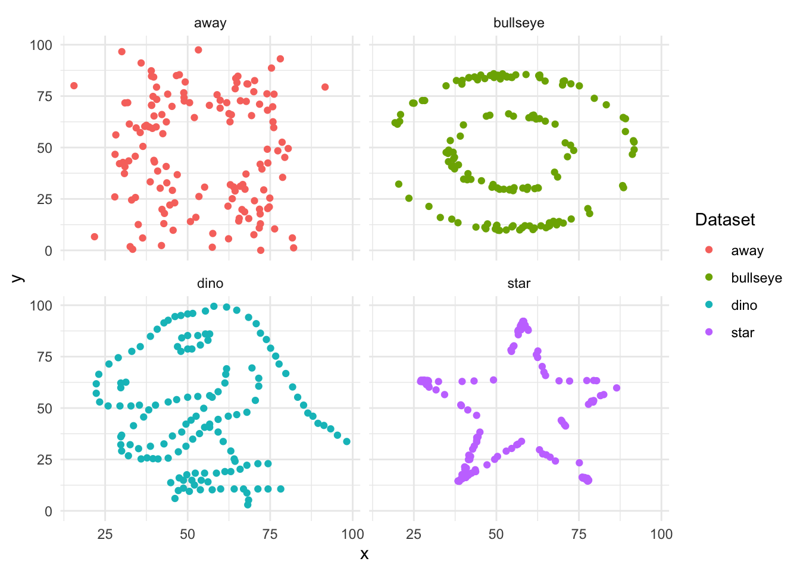
This is a variant of the famous “Anscombe’s Quartet” which comes with R. The key takeaway is that it is important to plot the actual data and not rely solely on summary statistics.
head(anscombe) x1 x2 x3 x4 y1 y2 y3 y4
1 10 10 10 8 8.04 9.14 7.46 6.58
2 8 8 8 8 6.95 8.14 6.77 5.76
3 13 13 13 8 7.58 8.74 12.74 7.71
4 9 9 9 8 8.81 8.77 7.11 8.84
5 11 11 11 8 8.33 9.26 7.81 8.47
6 14 14 14 8 9.96 8.10 8.84 7.04Anscombe’s Quartet consists of six observations for four different datasets, with x and y values for each observation. We need to manipulate this dataset with pivot_longer() to get it into the “tidy” format discussed in Online Appendix A.
# From Nick Tierney:
# https://www.njtierney.com/post/2020/06/01/tidy-anscombe/
# Code from pivot_longer() vignette.
tidy_anscombe <-
anscombe |>
pivot_longer(
everything(),
names_to = c(".value", "set"),
names_pattern = "(.)(.)"
)We can first create summary statistics (Table 5.2) and then graph the data (Figure 5.2). This shows the importance of graphing the actual data, rather than relying on summary statistics.
tidy_anscombe |>
summarise(
across(c(x, y), list(mean = mean, sd = sd)),
x_y_cor = cor(x, y),
.by = set
) |>
knitr::kable(
col.names = c(
"Dataset", "x mean", "x sd", "y mean", "y sd", "correlation"
),
digits = 1
)| Dataset | x mean | x sd | y mean | y sd | correlation |
|---|---|---|---|---|---|
| 1 | 9 | 3.3 | 7.5 | 2 | 0.8 |
| 2 | 9 | 3.3 | 7.5 | 2 | 0.8 |
| 3 | 9 | 3.3 | 7.5 | 2 | 0.8 |
| 4 | 9 | 3.3 | 7.5 | 2 | 0.8 |
tidy_anscombe |>
ggplot(aes(x = x, y = y, colour = set)) +
geom_point() +
geom_smooth(method = lm, se = FALSE) +
theme_minimal() +
facet_wrap(vars(set), nrow = 2, ncol = 2) +
labs(colour = "Dataset")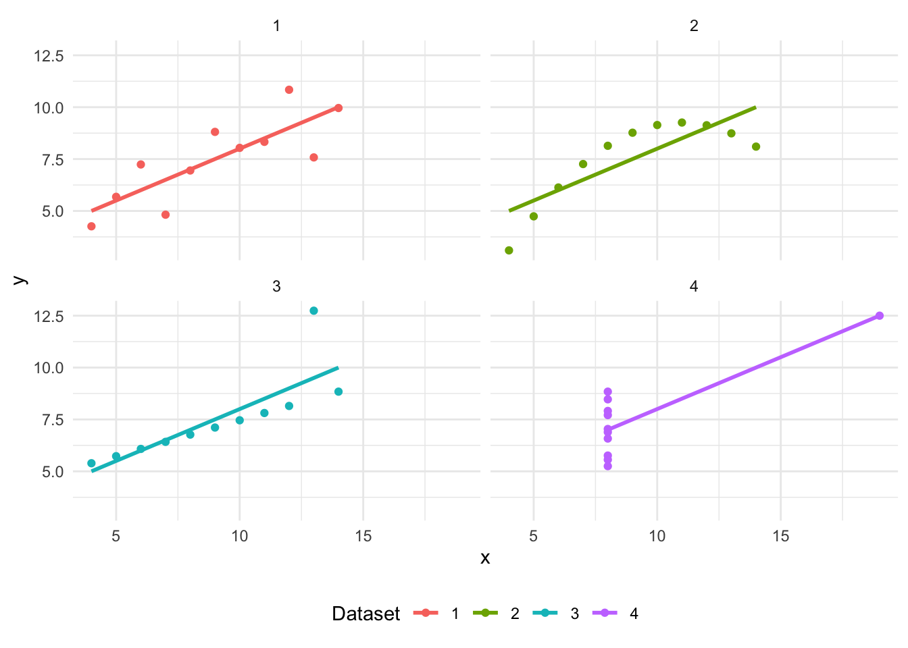
5.2.1 Bar charts
We typically use a bar chart when we have a categorical variable that we want to focus on. We saw an example of this in Chapter 2 where we constructed a graph of the number of occupied beds. The geom that we primarily use is geom_bar(), but there are many variants to cater for specific situations. To illustrate the use of bar charts, we use a dataset from the 1997-2001 British Election Panel Study that was put together by Fox and Andersen (2006).
# Vincent Arel Bundock provides access to this dataset.
beps <-
read_csv(
file =
"https://vincentarelbundock.github.io/Rdatasets/csv/carData/BEPS.csv"
)head(beps)# A tibble: 6 × 11
...1 vote age economic.cond.national economic.cond.househ…¹ Blair Hague
<dbl> <chr> <dbl> <dbl> <dbl> <dbl> <dbl>
1 1 Liberal… 43 3 3 4 1
2 2 Labour 36 4 4 4 4
3 3 Labour 35 4 4 5 2
4 4 Labour 24 4 2 2 1
5 5 Labour 41 2 2 1 1
6 6 Labour 47 3 4 4 4
# ℹ abbreviated name: ¹economic.cond.household
# ℹ 4 more variables: Kennedy <dbl>, Europe <dbl>, political.knowledge <dbl>,
# gender <chr>The dataset consists of which party the respondent supports, along with various demographic, economic, and political variables. In particular, we have the age of the respondents. We begin by creating age-groups from the ages, and making a bar chart showing the frequency of each age-group using geom_bar() (Figure 5.3).
beps <-
beps |>
mutate(
age_group =
case_when(
age < 35 ~ "<35",
age < 50 ~ "35-49",
age < 65 ~ "50-64",
age < 80 ~ "65-79",
age < 100 ~ "80-99"
),
age_group = factor(
age_group,
levels = c(
"<35",
"35-49",
"50-64",
"65-79",
"80-99"
)
)
)beps |>
ggplot(mapping = aes(x = age_group)) +
geom_bar() +
theme_minimal(base_size = 16) +
labs(x = "Age", y = "Observations")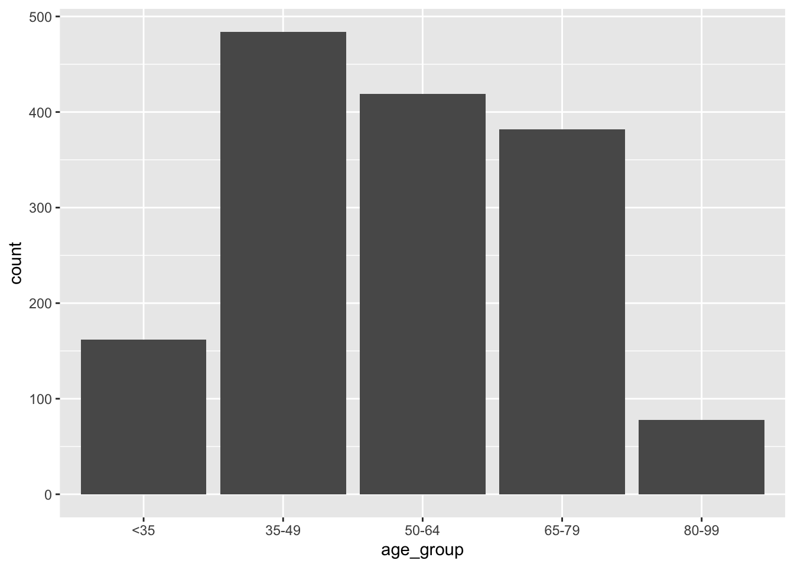
By default, geom_bar() creates a count of the number of times each age-group appears in the dataset. It does this because the default “stat” for geom_bar() is “count”, which saves us from having to create that statistic ourselves. But if we had already constructed a count (for instance, beps |> count(age_group)), then we could also specify a column of values for the y-axis and use geom_col() instead. Wickham, Çetinkaya-Rundel, and Grolemund ([2016] 2023) explains the details of this.
beps |>
count(age_group) |>
ggplot(mapping = aes(x = age_group, y = n)) +
geom_col() +
theme_minimal(base_size = 16) +
labs(x = "Age group", y = "Number of observations")
We may also like to consider different groupings of the data to get a different insight. For instance, we can look at which party the respondent supports, by age-group (Figure 5.4).
beps |>
ggplot(mapping = aes(x = age_group, fill = vote)) +
geom_bar()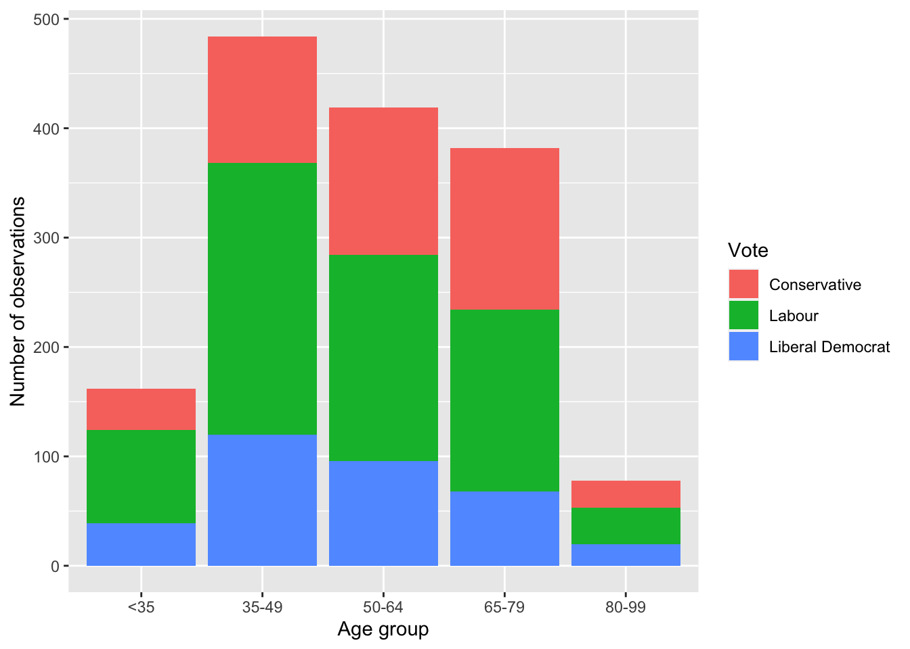
By default, these different groups are stacked, but they can be placed side by side with position = "dodge2" (Figure 5.5).
beps |>
ggplot(mapping = aes(x = age_group, fill = vote)) +
geom_bar(position = "dodge2")
# The 2 in "dodge2" ensures a little bit of space between bars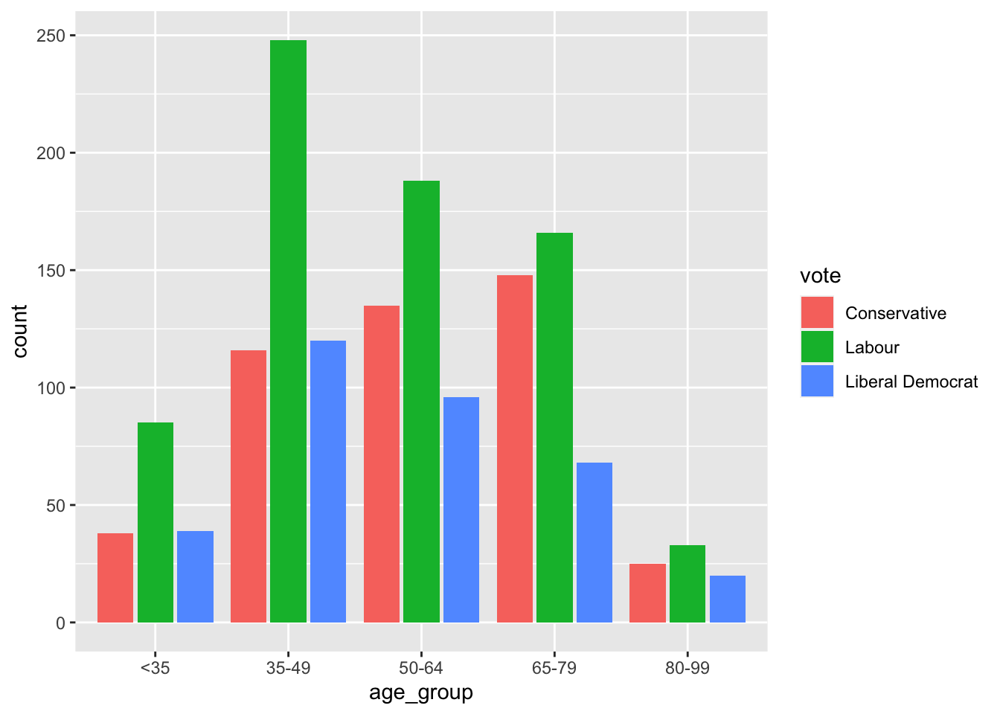
At this point, we may like to address the general look of the graph. There are various themes that are built into ggplot2. Some of these include theme_bw(), theme_classic(), theme_dark(), and theme_minimal(). A full list is available in the ggplot2 cheat sheet. We can use these themes by adding them as a layer (Figure 5.6). We can install themes from other packages, including ggthemes (Arnold 2021), and hrbrthemes (Rudis 2020). And we can also build our own.
library(patchwork)
theme_bw <-
beps |>
ggplot(mapping = aes(x = age_group)) +
geom_bar(position = "dodge") +
theme_bw()
theme_classic <-
beps |>
ggplot(mapping = aes(x = age_group)) +
geom_bar(position = "dodge") +
theme_classic()
theme_dark <-
beps |>
ggplot(mapping = aes(x = age_group)) +
geom_bar(position = "dodge") +
theme_dark()
theme_minimal <-
beps |>
ggplot(mapping = aes(x = age_group)) +
geom_bar(position = "dodge") +
theme_minimal()
(theme_bw + theme_classic) / (theme_dark + theme_minimal)
patchworkThere are a variety of ways to have multiple plots. These include the use of sub-figures, which was covered in Section 3.2.6, and patchwork (Pedersen 2022), which we illustrate in Figure 5.6 (and we will cover a third soon). Here we are using patchwork to bring together multiple graphs. To do this, we assign the graph to a name, then use “+” to signal which should be next to each other, “/” to signal which would be on top, and use brackets to indicate precedence
The default labels used by ggplot2 are the name of the relevant variable, and it is often useful to add more detail. We could also add a title and caption. A caption can be useful to add information about the source of the dataset. A title can be useful when the graph is going to be considered outside of the context of our paper. But in the case of a graph that will be included in a paper, the need for cross-references means that including a title within labs() is unnecessary (Figure 5.7).
beps |>
ggplot(mapping = aes(x = age_group, fill = vote)) +
geom_bar() +
theme_minimal() +
labs(
x = "Age-group of respondent",
y = "Number of respondents",
fill = "Voted for",
title = "Distribution of age-groups, and vote preference, in
the 1997-2001 British Election Panel Study",
caption = "Source: 1997-2001 British Election Panel Study."
)
We use facets to show variation, based on one or more variables (Wilkinson 2005, 219). Facets are especially useful when we have already used color to highlight variation in some other variable. For instance, we may be interested to explain vote, by age and gender (Figure 5.8) (there will be a problem with overlapping x-axis labels here, which we will address later).
beps |>
ggplot(mapping = aes(x = age_group, fill = vote)) +
geom_bar() +
theme_minimal() +
labs(
x = "Age-group of respondent",
y = "Number of respondents",
fill = "Voted for"
) +
facet_wrap(vars(gender))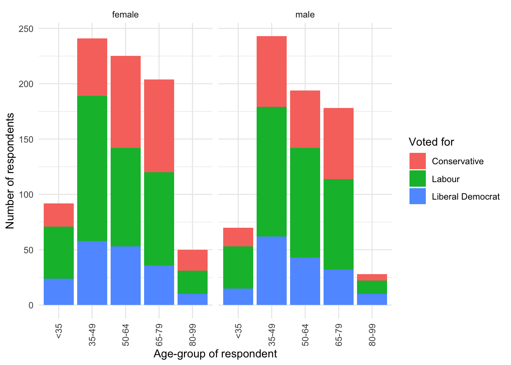
We could change facet_wrap() to wrap vertically instead of horizontally with dir = "v". Alternatively, we could specify a few rows, say nrow = 2, or a number of columns, say ncol = 2.
By default, both facets will have the same scale. We could enable both facets to have different scales, scales = "free", or just the x-axis scales = "free_x", or just the y-axis scales = "free_y" (Figure 5.9). Here we will also change the position of the legend with theme(legend.position="bottom").
beps |>
ggplot(mapping = aes(x = age_group, fill = vote)) +
geom_bar() +
theme_minimal() +
labs(
x = "Age-group of respondent",
y = "Number of respondents",
fill = "Voted for"
) +
facet_wrap(
vars(gender),
dir = "v",
scales = "free"
) +
theme(legend.position = "bottom")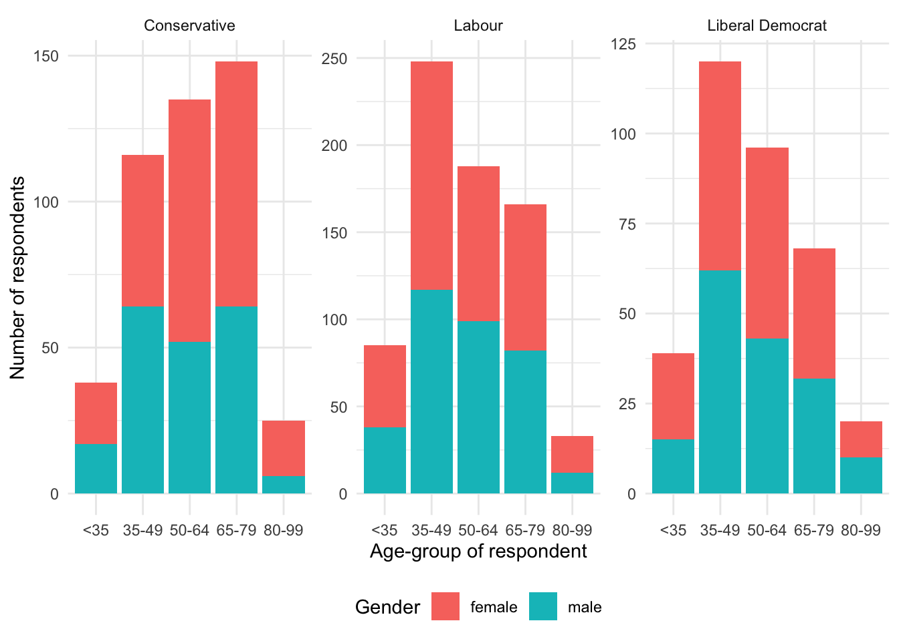
Finally, we can change the labels of the facets using labeller() (Figure 5.10).
new_labels <- c(
"0" = "No knowledge",
"1" = "Low knowledge",
"2" = "Moderate knowledge",
"3" = "High knowledge"
)
beps |>
ggplot(mapping = aes(x = age_group, fill = vote)) +
geom_bar() +
theme_minimal() +
labs(
x = "Age-group of respondent",
y = "Number of respondents",
fill = "Voted for"
) +
facet_wrap(
vars(political.knowledge),
dir = "v",
scales = "free",
labeller = labeller(political.knowledge = new_labels)
) +
theme(axis.text.x = element_text(angle = 90, vjust = 0.5, hjust = 1),
legend.position = "bottom"
)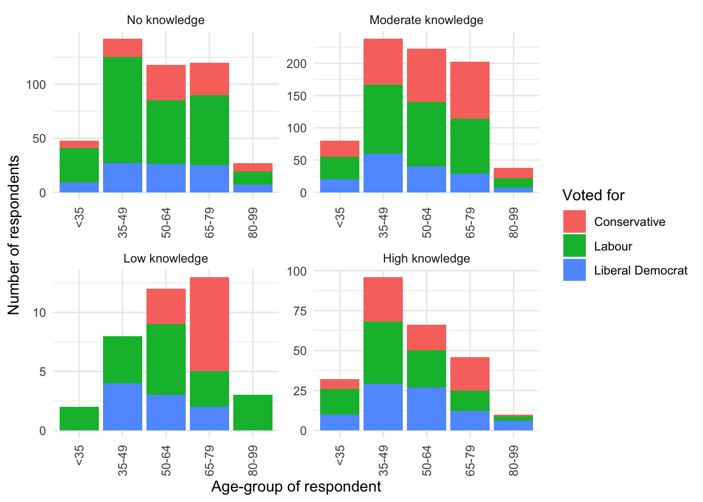
This means that we now have three ways to combine multiple graphs: sub-figures, facets, and patchwork. They are useful in different circumstances:
- sub-figures (covered in Chapter 3) when we are considering different variables;
- facets when considering different values of a categorical variable; and
patchworkwhen interested in bringing together entirely different graphs.
We now turn to the colors used in the graph. There are a variety of different ways to change the colors. The many palettes available from RColorBrewer (Neuwirth 2022) can be specified using scale_fill_brewer(). In the case of viridis (Garnier et al. 2021) we can specify the palettes using scale_fill_viridis(). Additionally, viridis is particularly focused on color-blind palettes (Figure 5.11).
Shoulders of giants
The name of the “brewer” palette refers to Cindy Brewer (Miller 2014). After earning a PhD in Geography from Michigan State University in 1991, she joined San Diego State University as an assistant professor, moving to Pennsylvania State University in 1994, where she was promoted to full professor in 2007. One of her best-known books is Brewer (2015). In 2019 she became only the ninth person to have been awarded the O. M. Miller Cartographic Medal since it was established in 1968.
library(viridis)
# Panel (a)
beps |>
ggplot(mapping = aes(x = age_group, fill = vote)) +
geom_bar() +
theme_minimal() +
labs(x = "Age-group",
y = "Number",
fill = "Voted for") +
theme(legend.position = "bottom") +
scale_fill_brewer(palette = "Blues")
# Panel (b)
beps |>
ggplot(mapping = aes(x = age_group, fill = vote)) +
geom_bar() +
theme_minimal() +
labs(x = "Age-group",
y = "Number",
fill = "Voted for") +
theme(legend.position = "bottom") +
scale_fill_brewer(palette = "Set1")
# Panel (c)
beps |>
ggplot(mapping = aes(x = age_group, fill = vote)) +
geom_bar() +
theme_minimal() +
labs(x = "Age-group",
y = "Number",
fill = "Voted for") +
theme(legend.position = "bottom") +
scale_fill_viridis(discrete = TRUE)
# Panel (d)
beps |>
ggplot(mapping = aes(x = age_group, fill = vote)) +
geom_bar() +
theme_minimal() +
labs(x = "Age-group",
y = "Number",
fill = "Voted for") +
theme(legend.position = "bottom") +
scale_fill_viridis(discrete = TRUE,
option = "magma")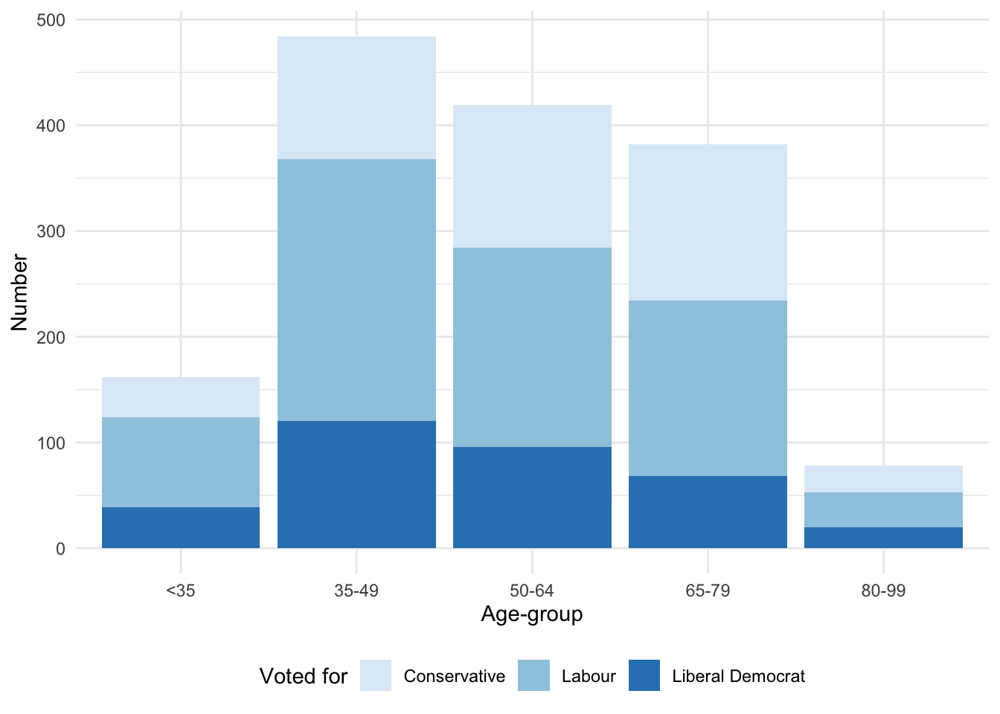


In addition to pre-built palettes, we can also build our own palette. That said, color is something to be considered with a great deal of care and it should only be used to increase the amount of information that is communicated (Cleveland 1994). Color should not be added to graphs unnecessarily—that is to say, it must play some role. Typically, that role is to distinguish different groups, which implies making the colors dissimilar. Color may also be appropriate if there is some relationship between the color and the variable. For instance, if making a graph of the price of mangoes and raspberries, then it could help the reader if the colors were yellow and red, respectively (Franconeri et al. 2021, 121).
5.2.2 Scatterplots
We are often interested in the relationship between two numeric or continuous variables. We can use scatterplots to show this. Unless there is a good reason to move to a different option, a scatterplot is almost always the best choice (Weissgerber et al. 2015). Some consider it the most versatile and useful graph option (Friendly and Wainer 2021, 121). To illustrate scatterplots, we use WDI (Arel-Bundock 2021b) to download some economic indicators from the World Bank, and in particular WDIsearch() to find the unique key that we need to pass to WDI() to facilitate the download.
Oh, you think we have good data on that!
Gross Domestic Product (GDP) “combines in a single figure, and with no double counting, all the output (or production) carried out by all the firms, non-profit institutions, government bodies and households in a given country during a given period, regardless of the type of goods and services produced, provided that the production takes place within the country’s economic territory” (OECD 2014, 15). The modern concept was developed by Simon Kuznets and is widely used and reported. There is a certain comfort in having a definitive and concrete single number to describe something as complicated as the entire economic activity of a country. And it is crucial that we have such summary statistics. But as with any summary statistic, its strength is also its weakness. A single number necessarily loses information about constituent components, and these distributional differences are critical. It highlights short term economic progress over longer term improvements. And “the quantitative definiteness of the estimates makes it easy to forget their dependence upon imperfect data and the consequently wide margins of possible error to which both totals and components are liable” (Kuznets, Epstein, and Jenks 1941, xxvi). Reliance on any one summary measure of economic performance presents a misguided picture not only of a country’s economy, but also of its peoples. There are clear areas where GDP needs to improve, including the health care sector and housing, as well as more disaggregated estimates (Moyer and Dunn 2020)
install.packages("WDI")library(tidyverse)
library(WDI)
WDIsearch("gdp growth") indicator name
712 5.51.01.10.gdp Per capita GDP growth
715 6.0.GDP_growth GDP growth (annual %)
11219 NV.AGR.TOTL.ZG Real agricultural GDP growth rates (%)
11418 NY.GDP.MKTP.KD.ZG GDP growth (annual %)
11421 NY.GDP.MKTP.KN.87.ZG GDP growth (annual %)WDIsearch("inflation") indicator name
7442 FP.CPI.TOTL.ZG Inflation, consumer prices (annual %)
7444 FP.FPI.TOTL.ZG Inflation, food prices (annual %)
7446 FP.WPI.TOTL.ZG Inflation, wholesale prices (annual %)
11393 NY.GDP.DEFL.87.ZG Inflation, GDP deflator (annual %)
11394 NY.GDP.DEFL.KD.ZG Inflation, GDP deflator (annual %)
11395 NY.GDP.DEFL.KD.ZG.AD Inflation, GDP deflator: linked series (annual %)WDIsearch("population, total") indicator name
9659 JI.POP.URBN.ZS Urban population, total (% of total population)
17674 SP.POP.TOTL Population, totalWDIsearch("Unemployment, total") indicator
17221 SL.UEM.TOTL.NE.ZS
17222 SL.UEM.TOTL.ZS
name
17221 Unemployment, total (% of total labor force) (national estimate)
17222 Unemployment, total (% of total labor force) (modeled ILO estimate)world_bank_data <-
WDI(
indicator = c(
"FP.CPI.TOTL.ZG",
"NY.GDP.MKTP.KD.ZG",
"SP.POP.TOTL",
"SL.UEM.TOTL.NE.ZS"
),
country = c("AU", "ET", "IN", "US")
)We may like to change the names to be more meaningful, and only keep the columns that we need.
world_bank_data <-
world_bank_data |>
rename(
inflation = FP.CPI.TOTL.ZG,
gdp_growth = NY.GDP.MKTP.KD.ZG,
population = SP.POP.TOTL,
unemployment_rate = SL.UEM.TOTL.NE.ZS
) |>
select(country, year, inflation, gdp_growth, population, unemployment_rate)
head(world_bank_data)# A tibble: 6 × 6
country year inflation gdp_growth population unemployment_rate
<chr> <dbl> <dbl> <dbl> <dbl> <dbl>
1 Australia 1960 3.73 NA 10276477 NA
2 Australia 1961 2.29 2.48 10483000 NA
3 Australia 1962 -0.319 1.29 10742000 NA
4 Australia 1963 0.641 6.22 10950000 NA
5 Australia 1964 2.87 6.98 11167000 NA
6 Australia 1965 3.41 5.98 11388000 NATo get started we can use geom_point() to make a scatterplot showing GDP growth and inflation, by country (Figure 5.12 (a)).
# Panel (a)
world_bank_data |>
ggplot(mapping = aes(x = gdp_growth, y = inflation, color = country)) +
geom_point()
# Panel (b)
world_bank_data |>
ggplot(mapping = aes(x = gdp_growth, y = inflation, color = country)) +
geom_point() +
theme_minimal() +
labs(
x = "GDP growth",
y = "Inflation",
color = "Country",
title = "Relationship between inflation and GDP growth",
caption = "Data source: World Bank."
)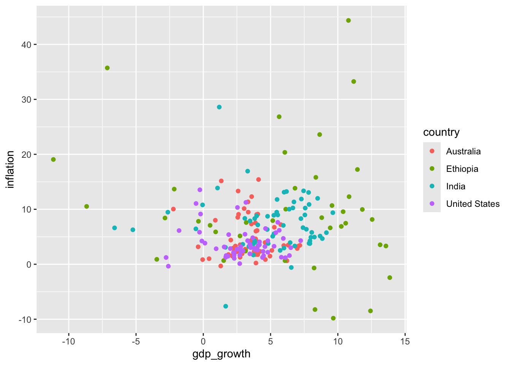

As with bar charts, we can change the theme, and update the labels (Figure 5.12 (b)). Also, we would normally not need both a caption and a title.
Here we use “color” instead of “fill” because we are using dots rather than bars. This also then slightly affects how we change the palette (Figure 5.13). That said, with particular types of dots, for instance shape = 21, it is possible to have both fill and color aesthetics.
# Panel (a)
world_bank_data |>
ggplot(mapping = aes(x = gdp_growth, y = inflation, color = country)) +
geom_point() +
theme_minimal() +
labs(
x = "GDP growth",
y = "Inflation",
color = "Country"
) +
theme(legend.position = "bottom") +
scale_color_brewer(palette = "Set1")
# Panel (b)
world_bank_data |>
ggplot(mapping = aes(x = gdp_growth, y = inflation)) +
geom_point(shape = 21, aes(fill = country), color = "black") +
theme_minimal() +
labs(
x = "GDP growth",
y = "Inflation",
color = "Country"
) +
theme(legend.position = "bottom") +
scale_color_brewer(palette = "Set1")
# Panel (c)
world_bank_data |>
ggplot(mapping = aes(x = gdp_growth, y = inflation, color = country)) +
geom_point() +
theme_minimal() +
labs(
x = "GDP growth",
y = "Inflation",
color = "Country"
) +
theme(legend.position = "bottom") +
scale_colour_viridis_d()
# Panel (d)
world_bank_data |>
ggplot(mapping = aes(x = gdp_growth, y = inflation, color = country)) +
geom_point() +
theme_minimal() +
labs(
x = "GDP growth",
y = "Inflation",
color = "Country"
) +
theme(legend.position = "bottom") +
scale_colour_viridis_d(option = "magma")

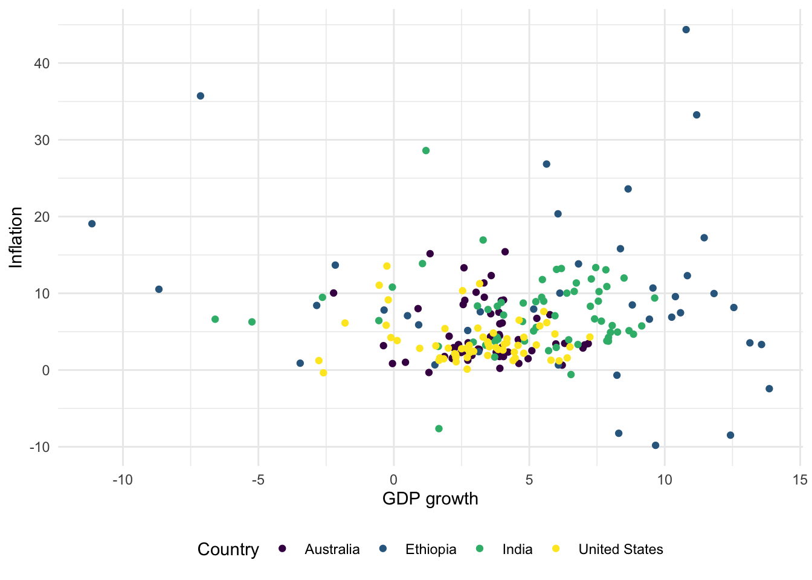

The points of a scatterplot sometimes overlap. We can address this situation in a variety of ways (Figure 5.14):
- Adding a degree of transparency to our dots with “alpha” (Figure 5.14 (a)). The value for “alpha” can vary between 0, which is fully transparent, and 1, which is completely opaque.
- Adding a small amount of noise, which slightly moves the points, using
geom_jitter()(Figure 5.14 (b)). By default, the movement is uniform in both directions, but we can specify which direction movement occurs with “width” or “height”. The decision between these two options turns on the degree to which exact accuracy matters, and the number of points: it is often useful to usegeom_jitter()when you want to highlight the relative density of points and not necessarily the exact value of individual points. When usinggeom_jitter()it is a good idea to set a seed, as introduced in Chapter 2, for reproducibility.
set.seed(853)
# Panel (a)
world_bank_data |>
ggplot(mapping = aes(
x = gdp_growth,
y = inflation,
color = country
)) +
geom_point(alpha = 0.5) +
theme_minimal() +
labs(
x = "GDP growth",
y = "Inflation",
color = "Country",
caption = "Data source: World Bank."
)
# Panel (b)
world_bank_data |>
ggplot(mapping = aes(
x = gdp_growth,
y = inflation,
color = country
)) +
geom_jitter(width = 0.4, height = 0.4) +
theme_minimal() +
labs(
x = "GDP growth",
y = "Inflation",
color = "Country",
caption = "Data source: World Bank."
)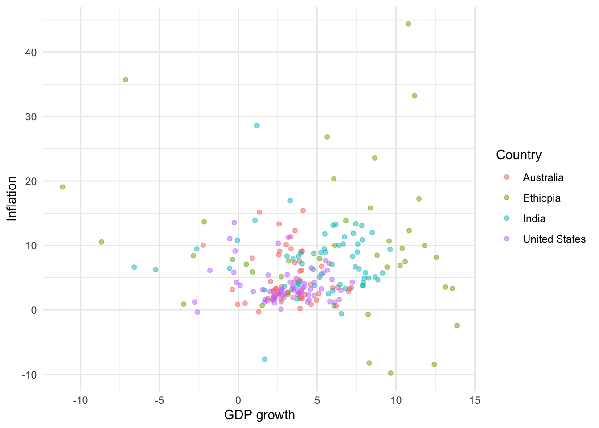
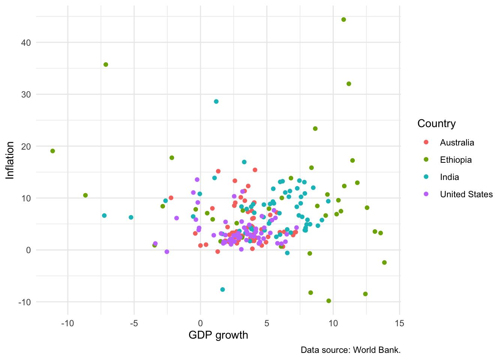
A common use-case for a scatterplot is to illustrate a relationship between two continuous variables. It can be useful to add a “summary” line using geom_smooth() (Figure 5.15). We can specify the relationship using “method”, change the color with “color”, and add or remove standard errors with “se”. A commonly used “method” is lm, which computes and plots a simple linear regression line similar to using the lm() function (R Core Team 2022). Using geom_smooth() adds a layer to the graph, and so it inherits aesthetics from ggplot(). For instance, that is why we have one line for each country in Figure 5.15 (a) and Figure 5.15 (b). We could overwrite that by specifying a particular color (Figure 5.15 (c)). There are situation where other types of fitted lines such as splines might be preferred.
# Panel (a)
world_bank_data |>
ggplot(mapping = aes(
x = gdp_growth,
y = inflation,
color = country
)) +
geom_jitter() +
geom_smooth() +
theme_minimal() +
labs(
x = "GDP growth",
y = "Inflation",
color = "Country"
)
# Panel (b)
world_bank_data |>
ggplot(mapping = aes(
x = gdp_growth,
y = inflation,
color = country
)) +
geom_jitter() +
geom_smooth(method = lm, se = FALSE) +
theme_minimal() +
labs(
x = "GDP growth",
y = "Inflation",
color = "Country"
)
# Panel (c)
world_bank_data |>
ggplot(mapping = aes(
x = gdp_growth,
y = inflation,
color = country
)) +
geom_jitter() +
geom_smooth(method = lm, color = "black", se = FALSE) +
theme_minimal() +
labs(
x = "GDP growth",
y = "Inflation",
color = "Country"
)
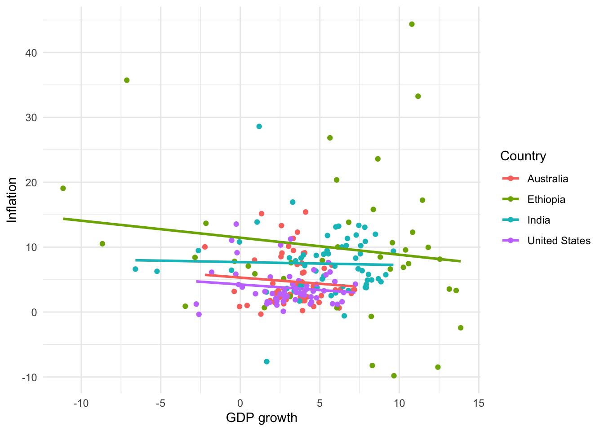

5.2.3 Line plots
We can use a line plot when we have variables that should be joined together, for instance, an economic time series. We will continue with the dataset from the World Bank and focus on US GDP growth using geom_line() (Figure 5.16).
world_bank_data |>
filter(country == "United States") |>
ggplot(mapping = aes(x = year, y = gdp_growth)) +
geom_line() +
theme_minimal() +
labs(
x = "Year",
y = "GDP growth",
caption = "Data source: World Bank."
)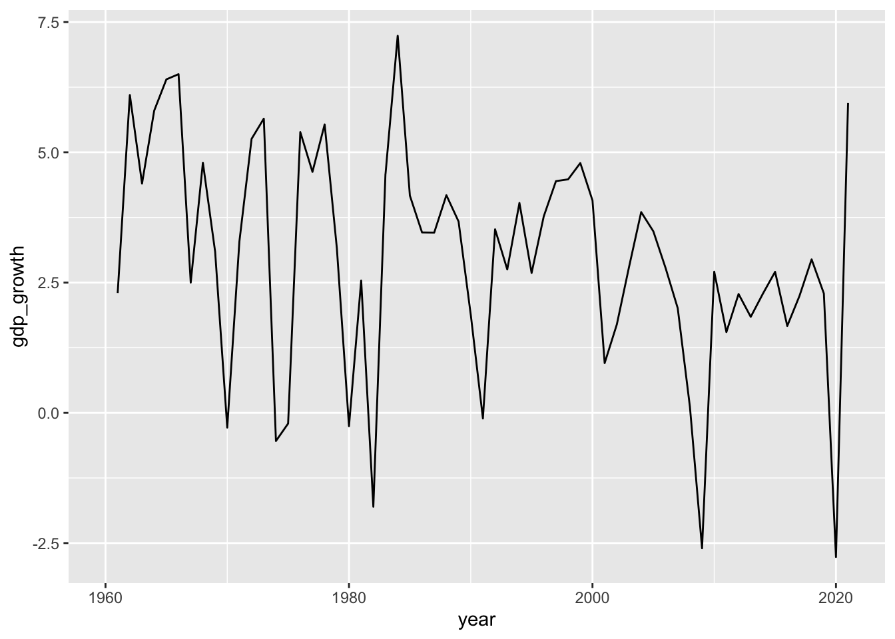
We can use geom_step(), a slight variant of geom_line(), to focus attention on the change from year to year (Figure 5.17).
world_bank_data |>
filter(country == "United States") |>
ggplot(mapping = aes(x = year, y = gdp_growth)) +
geom_step() +
theme_minimal() +
labs(
x = "Year",
y = "GDP growth",
caption = "Data source: World Bank."
)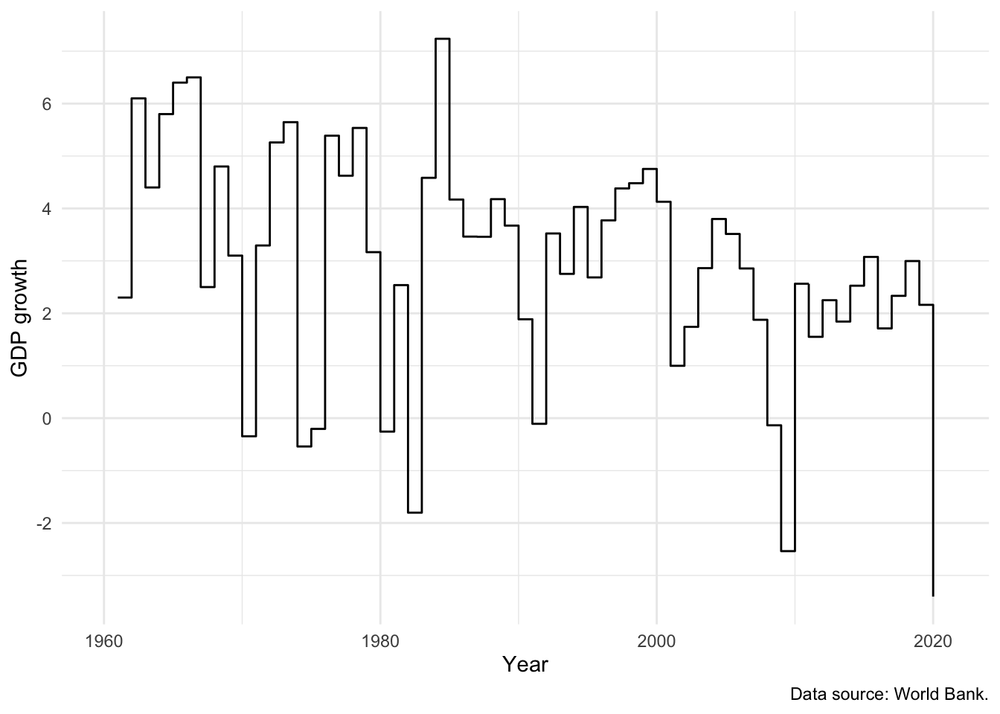
The Phillips curve is the name given to plot of the relationship between unemployment and inflation over time. An inverse relationship is sometimes found in the data, for instance in the UK between 1861 and 1957 (Phillips 1958). We have a variety of ways to investigate this relationship in our data, including:
- Adding a second line to our graph. For instance, we could add inflation (Figure 5.18). This requires us to use
pivot_longer(), which is discussed in Online Appendix A, to ensure that the data are in a tidy format. - Using
geom_path()to link values in the order they appear in the dataset. In Figure 5.19 we show a Phillips curve for the US between 1960 and 2020. Figure 5.19 does not appear to show any clear relationship between unemployment and inflation.
world_bank_data |>
filter(country == "United States") |>
select(-population, -gdp_growth) |>
pivot_longer(
cols = c("inflation", "unemployment_rate"),
names_to = "series",
values_to = "value"
) |>
ggplot(mapping = aes(x = year, y = value, color = series)) +
geom_line() +
theme_minimal() +
labs(
x = "Year",
y = "Value",
color = "Economic indicator",
caption = "Data source: World Bank."
) +
scale_color_brewer(
palette = "Set1",
labels = c("Inflation", "Unemployment")
) +
theme(legend.position = "bottom")
world_bank_data |>
filter(country == "United States") |>
ggplot(mapping = aes(x = unemployment_rate, y = inflation)) +
geom_path() +
theme_minimal() +
labs(
x = "Unemployment rate",
y = "Inflation",
caption = "Data source: World Bank."
)
5.2.4 Histograms
A histogram is useful to show the shape of the distribution of a continuous variable. The full range of the data values is split into equal intervals called “bins” and the histogram counts how many observations fall into which bin. In Figure 5.20 we examine the distribution of GDP in Ethiopia.
world_bank_data |>
filter(country == "Ethiopia") |>
ggplot(mapping = aes(x = gdp_growth)) +
geom_histogram() +
theme_minimal() +
labs(
x = "GDP growth",
y = "Number of occurrences",
caption = "Data source: World Bank."
)
The key component determining the shape of a histogram is the number of bins. This can be specified in one of two ways (Figure 5.21):
- specifying the number of “bins” to include; or
- specifying their “binwidth”.
# Panel (a)
world_bank_data |>
filter(country == "Ethiopia") |>
ggplot(mapping = aes(x = gdp_growth)) +
geom_histogram(bins = 2) +
theme_minimal() +
labs(
x = "GDP",
y = "Number of occurrences"
)
# Panel (b)
world_bank_data |>
filter(country == "Ethiopia") |>
ggplot(mapping = aes(x = gdp_growth)) +
geom_histogram(bins = 5) +
theme_minimal() +
labs(
x = "GDP",
y = "Number of occurrences"
)
# Panel (c)
world_bank_data |>
filter(country == "Ethiopia") |>
ggplot(mapping = aes(x = gdp_growth)) +
geom_histogram(bins = 20) +
theme_minimal() +
labs(
x = "GDP",
y = "Number of occurrences"
)
# Panel (d)
world_bank_data |>
filter(country == "Ethiopia") |>
ggplot(mapping = aes(x = gdp_growth)) +
geom_histogram(binwidth = 0.5) +
theme_minimal() +
labs(
x = "GDP",
y = "Number of occurrences"
)
# Panel (e)
world_bank_data |>
filter(country == "Ethiopia") |>
ggplot(mapping = aes(x = gdp_growth)) +
geom_histogram(binwidth = 2) +
theme_minimal() +
labs(
x = "GDP",
y = "Number of occurrences"
)
# Panel (f)
world_bank_data |>
filter(country == "Ethiopia") |>
ggplot(mapping = aes(x = gdp_growth)) +
geom_histogram(binwidth = 5) +
theme_minimal() +
labs(
x = "GDP",
y = "Number of occurrences"
)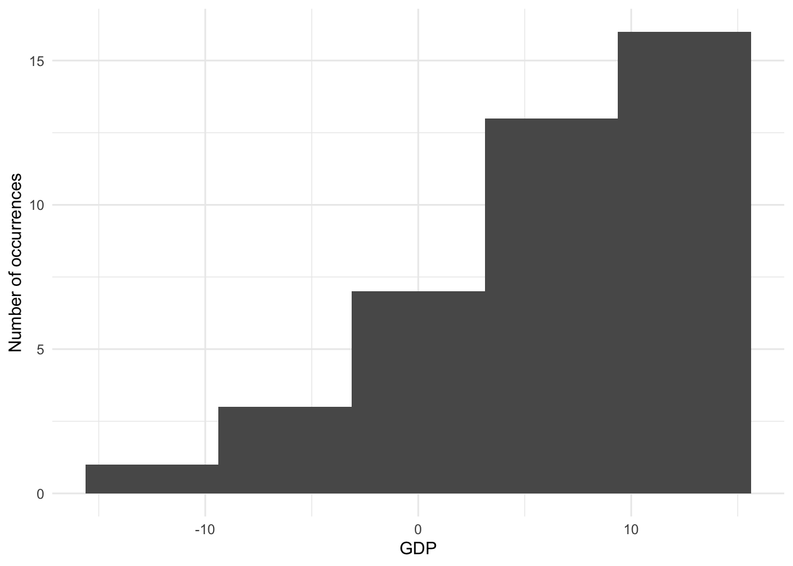
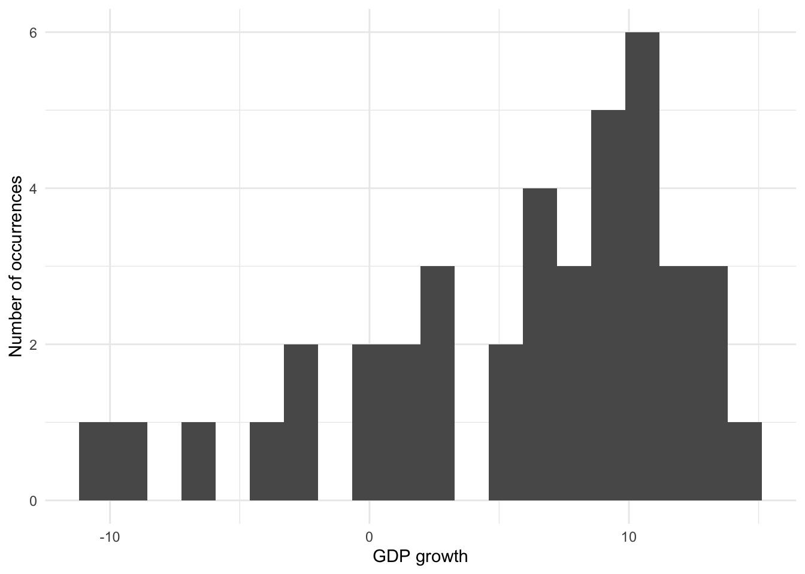
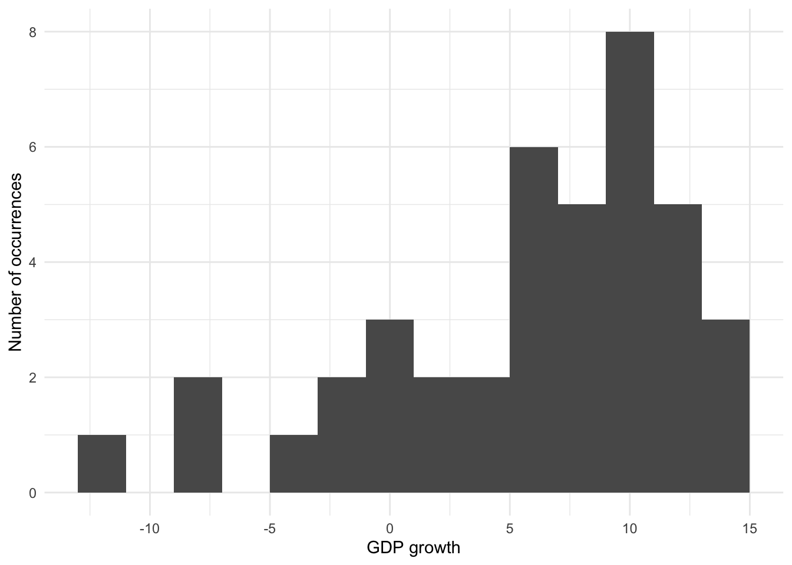
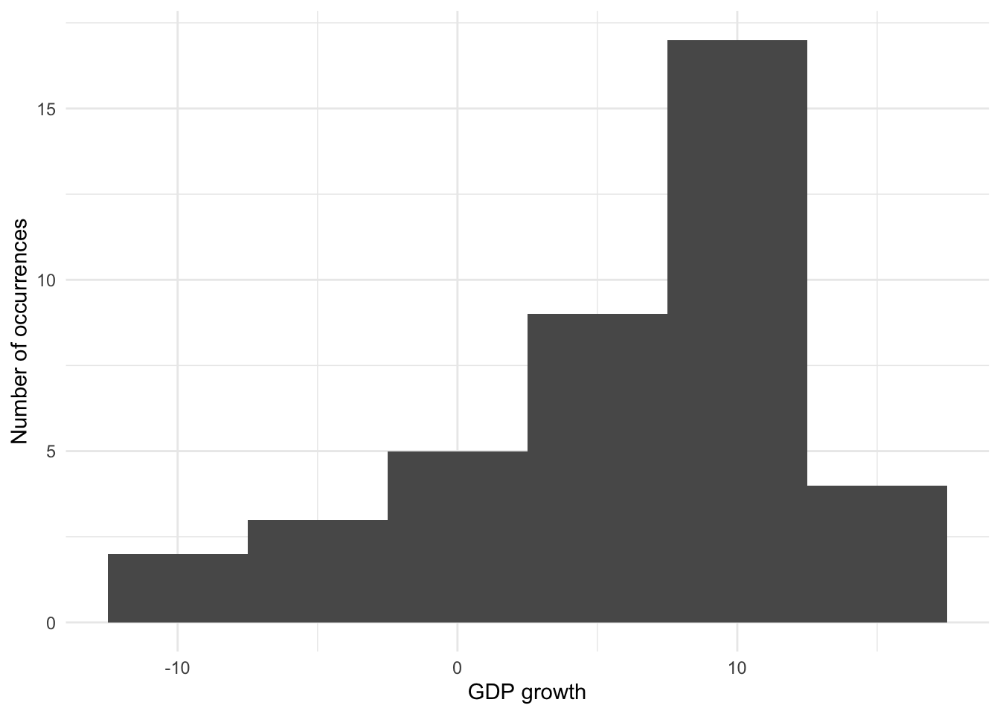


Histograms can be thought of as locally averaging data, and the number of bins affects how much of this occurs. When there are only two bins then the data become very smooth, but we lose a great deal of accuracy. Too few bins results in bias, while too many bins result in high variance (Wasserman 2005, 303). Our decision as to the number of bins, or their width, is concerned with trying to balance bias and variance. This will depend on a variety of concerns including the subject matter and the goal (Cleveland 1994, 135). This is one of the reasons that Denby and Mallows (2009) consider histograms to be especially valuable as exploratory tools, rather than static constructions.
Finally, while we can use “fill” to distinguish between different types of observations, it can get quite messy. It is usually better to:
- showing the distribution with columns and instead trace the outline of the distribution using
geom_freqpoly()(Figure 5.22 (a)) - to build it up using dots with
geom_dotplot()(Figure 5.22 (b)); or - add transparency, especially if the differences are more stark (Figure 5.22 (c)).
# Panel (a)
world_bank_data |>
ggplot(mapping = aes(x = gdp_growth, color = country)) +
geom_freqpoly() +
theme_minimal() +
labs(
x = "GDP",
y = "Number of occurrences",
color = "Country",
caption = "Data source: World Bank."
) +
scale_color_brewer(palette = "Set1")
# Panel (b)
world_bank_data |>
ggplot(mapping = aes(x = gdp_growth, group = country, fill = country)) +
geom_dotplot(method = "histodot") +
theme_minimal() +
labs(
x = "GDP",
y = "Number of occurrences",
fill = "Country",
caption = "Data source: World Bank."
) +
scale_color_brewer(palette = "Set1")
# Panel (c)
world_bank_data |>
filter(country %in% c("India", "United States")) |>
ggplot(mapping = aes(x = gdp_growth, fill = country)) +
geom_histogram(alpha = 0.5, position = "identity") +
theme_minimal() +
labs(
x = "GDP",
y = "Number of occurrences",
color = "Country",
caption = "Data source: World Bank."
) +
scale_color_brewer(palette = "Set1")
# Panel (d)
world_bank_data |>
ggplot(mapping = aes(x = gdp_growth, color = country)) +
stat_ecdf(geom = "point") +
theme_minimal() +
labs(
x = "GDP growth",
y = "Proportion",
color = "Country",
caption = "Data source: World Bank."
)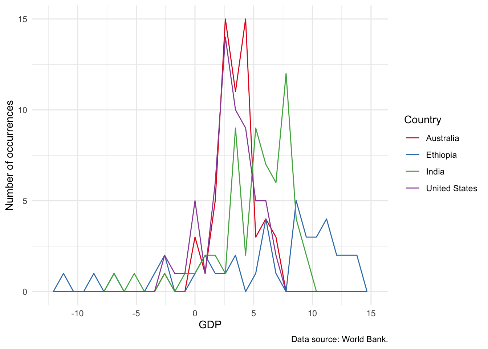
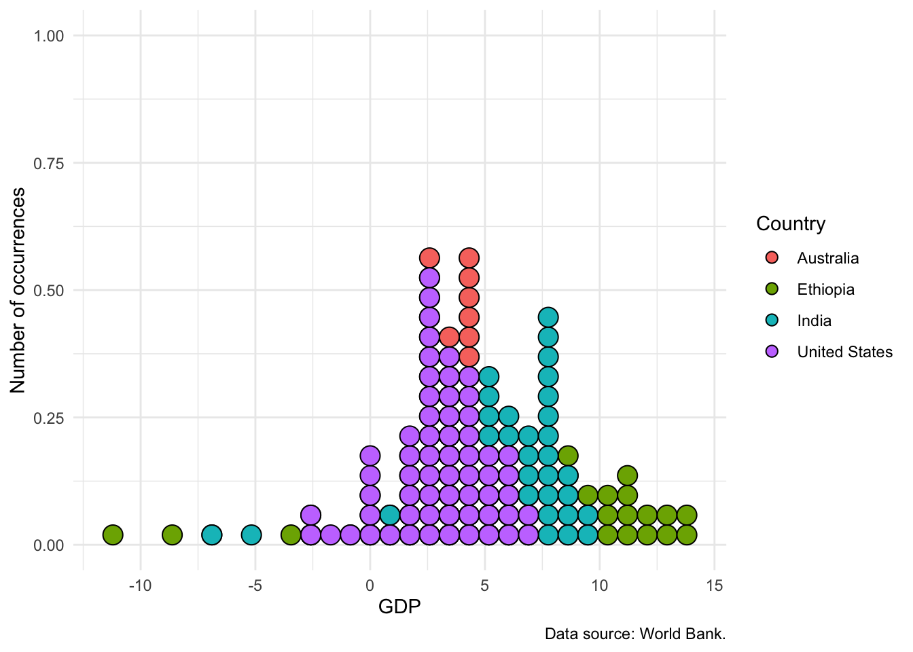
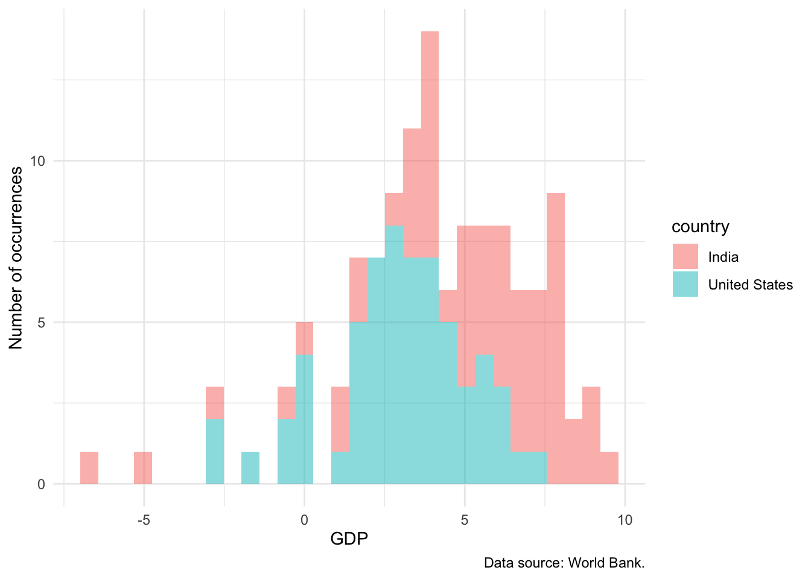

An interesting alternative to a histogram is the empirical cumulative distribution function (ECDF). The choice between this and a histogram is largely audience-specific. It is not appropriate for less-sophisticated audiences, but if the audience is quantitatively competent, then it can be a great choice because it does less smoothing than a histogram. We can build an ECDF with stat_ecdf(). For instance, Figure 5.22 (d) shows an ECDF equivalent to Figure 5.20.
5.2.5 Boxplots
A boxplot typically shows five aspects: 1) the median, 2) the 25th and 3) 75th percentiles. The fourth and fifth elements differ depending on specifics. One option is the minimum and maximum values. Another option is to consider the difference between the 75th and 25th percentiles, which is the interquartile range. The fourth and fifth elements are then \(1.5\times\mbox{IQR}\) from each the 25th and 75th percentiles. That latter approach is used, by default, in geom_boxplot from ggplot2. Spear (1952, 166) introduced the notion of a chart that focused on the range and various summary statistics including the median and the range, while Tukey (1977) focused on which summary statistics and popularized it (Wickham and Stryjewski 2011).
One reason for using graphs is that they help us understand and embrace how complex our data are, rather than trying to hide and smooth it away (Armstrong 2022). As such, boxplots are almost never an appropriate choice because they hide the distribution of data, rather than show it. Unless we need to compare the summary statistics of many variables at once, they should almost never be used (an example of this exception is Bethlehem et al. (2022)). This is because the same boxplot can apply to very different distributions. To see this, consider some simulated data from the beta distribution of two types. One type of data contains draws from two beta distributions: one that is right skewed and another that is left skewed. The other type of data contains draws from a beta distribution with no skew, noting that \(\mbox{Beta}(1, 1)\) is equivalent to \(\mbox{Uniform}(1, 1)\).
set.seed(853)
number_of_draws <- 10000
both_left_and_right_skew <-
c(
rbeta(number_of_draws / 2, 5, 2),
rbeta(number_of_draws / 2, 2, 5)
)
no_skew <-
rbeta(number_of_draws, 1, 1)
beta_distributions <-
tibble(
observation = c(both_left_and_right_skew, no_skew),
source = c(
rep("Left and right skew", number_of_draws),
rep("No skew", number_of_draws)
)
)We can first compare the boxplots of the two series (Figure 5.23 (a)). But if we plot the actual data then we can see how different they are (Figure 5.23 (b)).
beta_distributions |>
ggplot(aes(x = source, y = observation)) +
geom_boxplot() +
theme_classic()
beta_distributions |>
ggplot(aes(x = observation, color = source)) +
geom_freqpoly(binwidth = 0.05) +
theme_classic()
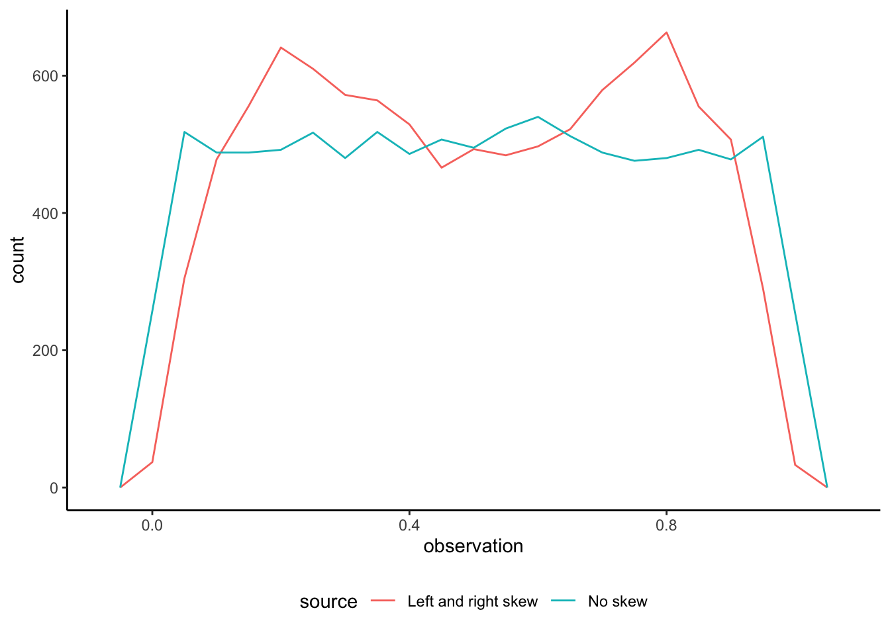
One way forward, if a boxplot must be included, is to include the actual data as a layer on top of the boxplot. For instance, in Figure 5.24 we show the distribution of inflation across the four countries. The reason that this works well is that it shows the data in greater fidelity. In general, better alternatives would be those that we covered earlier in this chapter.
world_bank_data |>
ggplot(mapping = aes(x = country, y = inflation)) +
geom_boxplot() +
geom_jitter(alpha = 0.3, width = 0.15, height = 0) +
theme_minimal() +
labs(
x = "Country",
y = "Inflation",
caption = "Data source: World Bank."
) +
scale_color_brewer(palette = "Set1")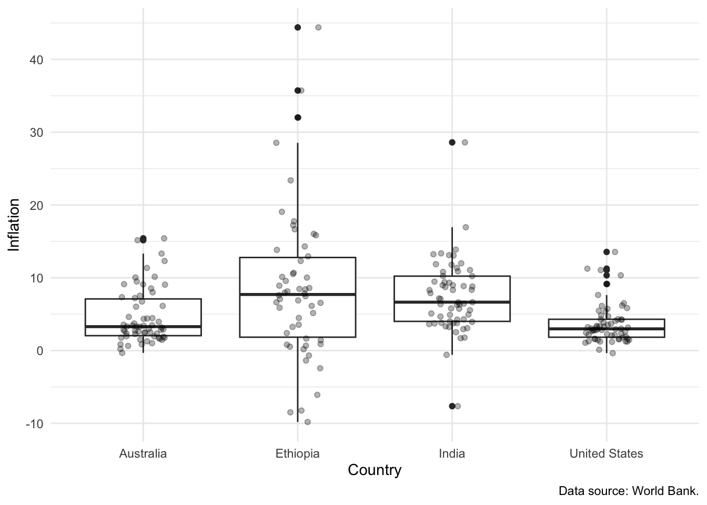
5.3 Tables
Tables are critical for telling a compelling story. Tables can communicate less information than a graph, but they do so at a high fidelity. For instance, Andersen and Armstrong II (2021) say that tables are especially useful to highlight a few specific values. In this book, we primarily use tables in three ways:
- To show some of our actual dataset, for which we use
kable()fromknitr(Xie 2022), alongsidekableExtra(Zhu 2021). - To communicate summary statistics, for which we use
modelsummary(Arel-Bundock 2021a). - To display regression results, for which we also use
modelsummary(Arel-Bundock 2021a).
It is worth pointing out that even for many of these applications, a graph may be a better choice, albeit one that requires more effort on the part of the author (Kastellec and Leoni 2007).
5.3.1 Showing part of a dataset
We illustrate showing part of a dataset using kable() from knitr and drawing on kableExtra for enhancement. We use the World Bank dataset that we downloaded earlier (unemployment data are not available for every year for every country).
library(knitr)
head(world_bank_data)# A tibble: 6 × 6
country year inflation gdp_growth population unemployment_rate
<chr> <dbl> <dbl> <dbl> <dbl> <dbl>
1 Australia 1960 3.73 NA 10276477 NA
2 Australia 1961 2.29 2.48 10483000 NA
3 Australia 1962 -0.319 1.29 10742000 NA
4 Australia 1963 0.641 6.22 10950000 NA
5 Australia 1964 2.87 6.98 11167000 NA
6 Australia 1965 3.41 5.98 11388000 NATo begin, we can display the first ten rows with the default kable() settings.
world_bank_data |>
slice(1:10) |>
kable()| country | year | inflation | gdp_growth | population | unemployment_rate |
|---|---|---|---|---|---|
| Australia | 1960 | 3.7288136 | NA | 10276477 | NA |
| Australia | 1961 | 2.2875817 | 2.482656 | 10483000 | NA |
| Australia | 1962 | -0.3194888 | 1.294611 | 10742000 | NA |
| Australia | 1963 | 0.6410256 | 6.216107 | 10950000 | NA |
| Australia | 1964 | 2.8662420 | 6.980061 | 11167000 | NA |
| Australia | 1965 | 3.4055728 | 5.980438 | 11388000 | NA |
| Australia | 1966 | 3.2934132 | 2.379040 | 11651000 | NA |
| Australia | 1967 | 3.4782609 | 6.304945 | 11799000 | NA |
| Australia | 1968 | 2.5210084 | 5.094034 | 12009000 | NA |
| Australia | 1969 | 3.2786885 | 7.045584 | 12263000 | NA |
To be able to cross-reference it in the text, we need to add a caption to the R chunk. We can also make the column names more informative with “col.names” and specify the number of digits to be displayed (Table 5.3).
world_bank_data |>
slice(1:10) |>
kable(
col.names = c(
"Country",
"Year",
"Inflation",
"GDP growth",
"Population",
"Unemployment rate"
),
digits = 1
)| Country | Year | Inflation | GDP growth | Population | Unemployment rate |
|---|---|---|---|---|---|
| Australia | 1960 | 3.7 | NA | 10276477 | NA |
| Australia | 1961 | 2.3 | 2.5 | 10483000 | NA |
| Australia | 1962 | -0.3 | 1.3 | 10742000 | NA |
| Australia | 1963 | 0.6 | 6.2 | 10950000 | NA |
| Australia | 1964 | 2.9 | 7.0 | 11167000 | NA |
| Australia | 1965 | 3.4 | 6.0 | 11388000 | NA |
| Australia | 1966 | 3.3 | 2.4 | 11651000 | NA |
| Australia | 1967 | 3.5 | 6.3 | 11799000 | NA |
| Australia | 1968 | 2.5 | 5.1 | 12009000 | NA |
| Australia | 1969 | 3.3 | 7.0 | 12263000 | NA |
5.3.2 Improving the formatting
When producing PDFs, the “booktabs” option makes a host of small changes to the default display and results in tables that look better (Table 5.4). When using “booktabs” we additionally should specify “linesep” otherwise kable() adds a small space every five lines. (None of this will show up for html output.)
world_bank_data |>
slice(1:10) |>
kable(
col.names = c(
"Country",
"Year",
"Inflation",
"GDP growth",
"Population",
"Unemployment rate"
),
digits = 1,
booktabs = TRUE,
linesep = ""
)| Country | Year | Inflation | GDP growth | Population | Unemployment rate |
|---|---|---|---|---|---|
| Australia | 1960 | 3.7 | NA | 10276477 | NA |
| Australia | 1961 | 2.3 | 2.5 | 10483000 | NA |
| Australia | 1962 | -0.3 | 1.3 | 10742000 | NA |
| Australia | 1963 | 0.6 | 6.2 | 10950000 | NA |
| Australia | 1964 | 2.9 | 7.0 | 11167000 | NA |
| Australia | 1965 | 3.4 | 6.0 | 11388000 | NA |
| Australia | 1966 | 3.3 | 2.4 | 11651000 | NA |
| Australia | 1967 | 3.5 | 6.3 | 11799000 | NA |
| Australia | 1968 | 2.5 | 5.1 | 12009000 | NA |
| Australia | 1969 | 3.3 | 7.0 | 12263000 | NA |
world_bank_data |>
slice(1:10) |>
kable(
col.names = c(
"Country",
"Year",
"Inflation",
"GDP growth",
"Population",
"Unemployment rate"
),
digits = 1,
booktabs = TRUE
)| Country | Year | Inflation | GDP growth | Population | Unemployment rate |
|---|---|---|---|---|---|
| Australia | 1960 | 3.7 | NA | 10276477 | NA |
| Australia | 1961 | 2.3 | 2.5 | 10483000 | NA |
| Australia | 1962 | -0.3 | 1.3 | 10742000 | NA |
| Australia | 1963 | 0.6 | 6.2 | 10950000 | NA |
| Australia | 1964 | 2.9 | 7.0 | 11167000 | NA |
| Australia | 1965 | 3.4 | 6.0 | 11388000 | NA |
| Australia | 1966 | 3.3 | 2.4 | 11651000 | NA |
| Australia | 1967 | 3.5 | 6.3 | 11799000 | NA |
| Australia | 1968 | 2.5 | 5.1 | 12009000 | NA |
| Australia | 1969 | 3.3 | 7.0 | 12263000 | NA |
We specify the alignment of the columns using a character vector of “l” (left), “c” (center), and “r” (right) (Table 5.6). Additionally, we can change the formatting. For instance, we could specify groupings for numbers that are at least 1,000 using “format.args = list(big.mark =”,“)”.
world_bank_data |>
slice(1:10) |>
mutate(year = as.factor(year)) |>
kable(
col.names = c(
"Country",
"Year",
"Inflation",
"GDP growth",
"Population",
"Unemployment rate"
),
digits = 1,
align = c("l", "l", "c", "c", "r", "r"),
format.args = list(big.mark = ",")
)| Country | Year | Inflation | GDP growth | Population | Unemployment rate |
|---|---|---|---|---|---|
| Australia | 1960 | 3.7 | NA | 10,276,477 | NA |
| Australia | 1961 | 2.3 | 2.5 | 10,483,000 | NA |
| Australia | 1962 | -0.3 | 1.3 | 10,742,000 | NA |
| Australia | 1963 | 0.6 | 6.2 | 10,950,000 | NA |
| Australia | 1964 | 2.9 | 7.0 | 11,167,000 | NA |
| Australia | 1965 | 3.4 | 6.0 | 11,388,000 | NA |
| Australia | 1966 | 3.3 | 2.4 | 11,651,000 | NA |
| Australia | 1967 | 3.5 | 6.3 | 11,799,000 | NA |
| Australia | 1968 | 2.5 | 5.1 | 12,009,000 | NA |
| Australia | 1969 | 3.3 | 7.0 | 12,263,000 | NA |
We can use kableExtra (Zhu 2021) to add extra functionality to kable. For instance, we could add a row that groups some of the columns using add_header_above() (Table 5.7). This impacts the spacing of the table, so we can also specify kable_styling(full_width = TRUE) to make sure that the table still fills the full width of our document.
library(kableExtra)
world_bank_data |>
slice(1:10) |>
kable(
col.names = c(
"Country",
"Year",
"Inflation",
"GDP growth",
"Population",
"Unemployment rate"
),
digits = 1,
align = c("l", "l", "c", "c", "r", "r"),
) |>
add_header_above(c(" " = 2, "Economic indicators" = 4)) |>
kable_styling(full_width = TRUE)| Country | Year | Inflation | GDP growth | Population | Unemployment rate |
|---|---|---|---|---|---|
| Australia | 1960 | 3.7 | NA | 10276477 | NA |
| Australia | 1961 | 2.3 | 2.5 | 10483000 | NA |
| Australia | 1962 | -0.3 | 1.3 | 10742000 | NA |
| Australia | 1963 | 0.6 | 6.2 | 10950000 | NA |
| Australia | 1964 | 2.9 | 7.0 | 11167000 | NA |
| Australia | 1965 | 3.4 | 6.0 | 11388000 | NA |
| Australia | 1966 | 3.3 | 2.4 | 11651000 | NA |
| Australia | 1967 | 3.5 | 6.3 | 11799000 | NA |
| Australia | 1968 | 2.5 | 5.1 | 12009000 | NA |
| Australia | 1969 | 3.3 | 7.0 | 12263000 | NA |
5.3.3 Communicating summary statistics
We can use datasummary() from modelsummary to create tables of summary statistics from our dataset.
library(modelsummary)
world_bank_data |>
datasummary_skim()| Unique (#) | Missing (%) | Mean | SD | Min | Median | Max | ||
|---|---|---|---|---|---|---|---|---|
| year | 62 | 0 | 1990.5 | 17.9 | 1960.0 | 1990.5 | 2021.0 | ![]() |
| inflation | 243 | 2 | 6.1 | 6.5 | −9.8 | 4.3 | 44.4 | ![]() |
| gdp_growth | 224 | 10 | 4.2 | 3.7 | −11.1 | 3.9 | 13.9 | ![]() |
| population | 248 | 0 | 307639372.3 | 385816342.2 | 10276477.0 | 150477013.0 | 1407563842.0 | ![]() |
| unemployment_rate | 106 | 52 | 6.1 | 1.9 | 1.2 | 5.8 | 10.9 | ![]() |
By default, datasummary() summarizes the “numeric” variables, but we can ask for the “categorical” variables (Table 5.8). Additionally we can add cross-references in the same way as kable(), that is, include a title and then cross-reference the name of the R chunk.
world_bank_data |>
datasummary_skim(type = "categorical")| country | N | % |
|---|---|---|
| Australia | 62 | 25.0 |
| Ethiopia | 62 | 25.0 |
| India | 62 | 25.0 |
| United States | 62 | 25.0 |
We can create a table that shows the correlation between variables using datasummary_correlation() (Table 5.9).
world_bank_data |>
rename(unem_rate = unemployment_rate) |>
datasummary_correlation()| year | inflation | gdp_growth | population | unem_rate | |
|---|---|---|---|---|---|
| year | 1 | . | . | . | . |
| inflation | .03 | 1 | . | . | . |
| gdp_growth | .11 | .01 | 1 | . | . |
| population | .25 | .06 | .16 | 1 | . |
| unem_rate | −.11 | −.12 | −.26 | −.11 | 1 |
We typically need a table of descriptive statistics that we could add to our paper (Table 5.10). This contrasts with Table 5.8 which would likely not be included in a paper. We can add a note about the source of the data using notes.
datasummary_balance(
formula = ~country,
data = world_bank_data |> filter(country %in% c("Australia", "Ethiopia")),
dinm = FALSE,
notes = "Data source: World Bank."
)| Mean | Std. Dev. | Mean | Std. Dev. | |
|---|---|---|---|---|
| year | 1990.5 | 18.0 | 1990.5 | 18.0 |
| inflation | 4.7 | 3.8 | 9.1 | 10.6 |
| gdp_growth | 3.4 | 1.8 | 5.9 | 6.4 |
| population | 17351313.1 | 4407899.0 | 57185292.0 | 29328845.8 |
| unemployment_rate | 6.8 | 1.7 | 2.8 | 1.0 |
| Data source: World Bank. |
5.3.4 Display regression results
Finally, one common reason for needing a table is to report regression results. We will do this using modelsummary() from modelsummary (Arel-Bundock 2021a). For instance, we could display the estimates from a few different models Table 5.11.
first_model <- lm(
formula = gdp_growth ~ inflation,
data = world_bank_data
)
second_model <- lm(
formula = gdp_growth ~ inflation + country,
data = world_bank_data
)
third_model <- lm(
formula = gdp_growth ~ inflation + country + population,
data = world_bank_data
)
modelsummary(list(first_model, second_model, third_model))| (1) | (2) | (3) | |
|---|---|---|---|
| (Intercept) | 4.147 | 3.676 | 3.611 |
| (0.343) | (0.484) | (0.482) | |
| inflation | 0.006 | −0.068 | −0.065 |
| (0.039) | (0.040) | (0.039) | |
| countryEthiopia | 2.896 | 2.716 | |
| (0.740) | (0.740) | ||
| countryIndia | 1.916 | −0.730 | |
| (0.642) | (1.465) | ||
| countryUnited States | −0.436 | −1.145 | |
| (0.633) | (0.722) | ||
| population | 0.000 | ||
| (0.000) | |||
| Num.Obs. | 223 | 223 | 223 |
| R2 | 0.000 | 0.111 | 0.127 |
| R2 Adj. | −0.004 | 0.095 | 0.107 |
| AIC | 1217.7 | 1197.5 | 1195.4 |
| BIC | 1227.9 | 1217.9 | 1219.3 |
| Log.Lik. | −605.861 | −592.752 | −590.704 |
| F | 0.024 | 6.806 | |
| RMSE | 3.66 | 3.45 | 3.42 |
We can adjust the number of significant digits (Table 5.12). This is a critical aspect of establishing credibility. It is certainly not the case that we should just naively add as many significant digits as possible (Howes 2022). Instead, we should think carefully about the data-generating process that we have access to and adjust our significant digits appropriately.
modelsummary(
list(first_model, second_model, third_model),
fmt = 1
)| (1) | (2) | (3) | |
|---|---|---|---|
| (Intercept) | 4.1 | 3.7 | 3.6 |
| (0.3) | (0.5) | (0.5) | |
| inflation | 0.0 | −0.1 | −0.1 |
| (0.0) | (0.0) | (0.0) | |
| countryEthiopia | 2.9 | 2.7 | |
| (0.7) | (0.7) | ||
| countryIndia | 1.9 | −0.7 | |
| (0.6) | (1.5) | ||
| countryUnited States | −0.4 | −1.1 | |
| (0.6) | (0.7) | ||
| population | 0.0 | ||
| (0.0) | |||
| Num.Obs. | 223 | 223 | 223 |
| R2 | 0.000 | 0.111 | 0.127 |
| R2 Adj. | −0.004 | 0.095 | 0.107 |
| AIC | 1217.7 | 1197.5 | 1195.4 |
| BIC | 1227.9 | 1217.9 | 1219.3 |
| Log.Lik. | −605.861 | −592.752 | −590.704 |
| F | 0.024 | 6.806 | |
| RMSE | 3.66 | 3.45 | 3.42 |
5.4 Maps
In many ways maps can be thought of as another type of graph, where the x-axis is latitude, the y-axis is longitude, and there is some outline or a background image. It is possible that they are the oldest and best understood type of chart (Karsten 1923, 1). Some ggplot2 “pseudocode” to create a map could look something like this.
ggplot() +
geom_polygon(
# First draw an outline
data = some_data,
aes(
x = latitude,
y = longitude,
group = group
)
) +
geom_point(
# Then add points of interest
data = some_other_data,
aes(
x = latitude,
y = longitude
)
)We will be able to get maps working in a manner that is mostly as straight forward as that. That said, it is not to be taken too lightly that different map projections lead to different maps. Things quickly get complicated!
The first step is to get some data. There is some geographic data built into ggplot2, and there is additional information in the “world.cities” dataset from maps.
library(maps)
france <- map_data(map = "france")
head(france) long lat group order region subregion
1 2.557093 51.09752 1 1 Nord <NA>
2 2.579995 51.00298 1 2 Nord <NA>
3 2.609101 50.98545 1 3 Nord <NA>
4 2.630782 50.95073 1 4 Nord <NA>
5 2.625894 50.94116 1 5 Nord <NA>
6 2.597699 50.91967 1 6 Nord <NA>french_cities <-
world.cities |>
filter(country.etc == "France")
head(french_cities) name country.etc pop lat long capital
1 Abbeville France 26656 50.12 1.83 0
2 Acheres France 23219 48.97 2.06 0
3 Agde France 23477 43.33 3.46 0
4 Agen France 34742 44.20 0.62 0
5 Aire-sur-la-Lys France 10470 50.64 2.39 0
6 Aix-en-Provence France 148622 43.53 5.44 0With that information in hand, we can then create a map of France that shows the larger cities (Figure 5.25). We use geom_polygon() from ggplot2 to draw shapes by connecting points within groups. And coord_map() adjusts for the fact that we are making a 2D map to represent a world that is 3D.
ggplot() +
geom_polygon(
data = france,
aes(
x = long,
y = lat,
group = group
),
fill = "white",
colour = "grey"
) +
coord_map() +
geom_point(
aes(
x = french_cities$long,
y = french_cities$lat
),
alpha = 0.3,
color = "black"
) +
theme_classic() +
labs(
x = "Longitude",
y = "Latitude"
)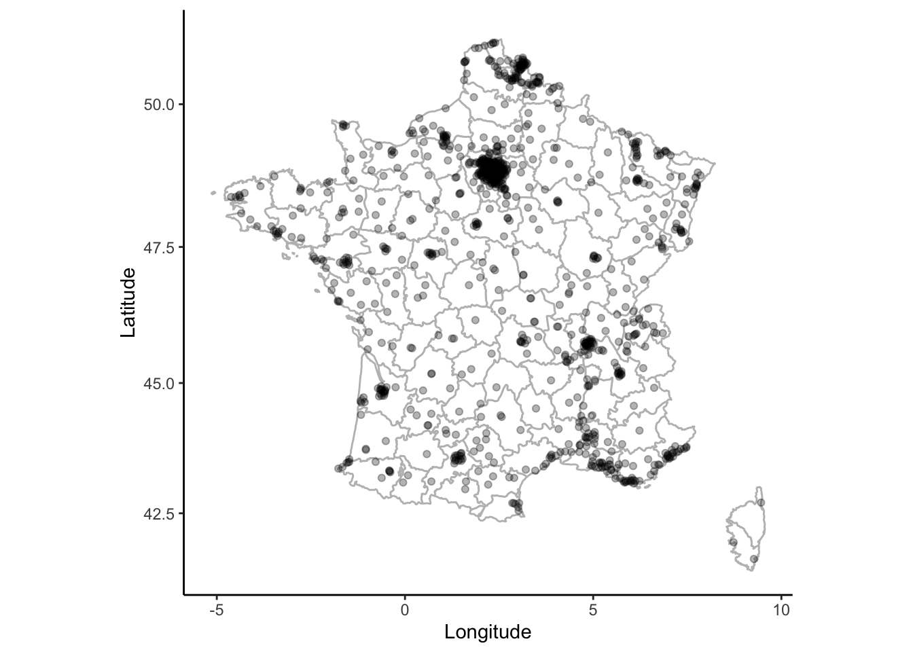
As is often the case with R, there are many ways to get started creating static maps. We have seen how they can be built using only ggplot2, but ggmap brings additional functionality (Kahle and Wickham 2013).
There are two essential components to a map:
- a border or background image (sometimes called a tile); and
- something of interest within that border, or on top of that tile.
In ggmap, we use an open-source option for our tile, Stamen Maps. And we use plot points based on latitude and longitude.
5.4.1 Australian polling places
In Australia, people have to go to “booths” in order to vote. Because the booths have coordinates (latitude and longitude), we can plot them in a map. One reason we may like to do that is to notice voting patterns with respect to geographies.
To get started we need to get a tile. We are going to use ggmap to get a tile from Stamen Maps, which builds on OpenStreetMap. The main argument to this function is to specify a bounding box. A bounding box is the coordinates of the edges that you are interested in. This requires two latitudes and two longitudes—one for each corner of the bounding box.
It can be useful to use Google Maps, or other mapping platform, to find the coordinate values that you need. In this case we have provided it with coordinates such that it will be centered around Australia’s capital Canberra.
library(ggmap)
bbox <- c(left = 148.95, bottom = -35.5, right = 149.3, top = -35.1)Once you have defined the bounding box, then the function get_stamenmap() will get the tiles in that area (Figure 5.26). The number of tiles that it needs depends on the zoom, and the type of tiles that it gets depends on the type of map. We have used a black and white type of map but there are others including color and terrain. At this point we can pass the tiles to ggmap() and it will plot the tiles. You need an internet connection for this to work as get_stamenmap() will be actively downloading these tiles.
canberra_stamen_map <- get_stamenmap(bbox,
zoom = 11,
maptype = "toner-lite")
ggmap(canberra_stamen_map)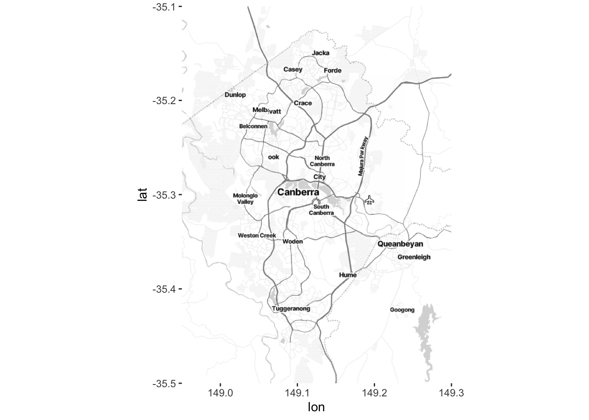
Once we have a map then we can use ggmap() to plot it. Now we want to get some data that we plot on top of our tiles. We will plot the location of the polling place based on its “division”. This is available from the Australian Electoral Commission (AEC).
# Read in the booths data for each year
booths <-
readr::read_csv(
"https://results.aec.gov.au/24310/Website/Downloads/GeneralPollingPlacesDownload-24310.csv",
skip = 1,
guess_max = 10000
)
head(booths)# A tibble: 6 × 15
State DivisionID DivisionNm PollingPlaceID PollingPlaceTypeID PollingPlaceNm
<chr> <dbl> <chr> <dbl> <dbl> <chr>
1 ACT 318 Bean 93925 5 Belconnen BEAN …
2 ACT 318 Bean 93927 5 BLV Bean PPVC
3 ACT 318 Bean 11877 1 Bonython
4 ACT 318 Bean 11452 1 Calwell
5 ACT 318 Bean 8761 1 Chapman
6 ACT 318 Bean 8763 1 Chisholm
# ℹ 9 more variables: PremisesNm <chr>, PremisesAddress1 <chr>,
# PremisesAddress2 <chr>, PremisesAddress3 <chr>, PremisesSuburb <chr>,
# PremisesStateAb <chr>, PremisesPostCode <chr>, Latitude <dbl>,
# Longitude <dbl>This dataset is for the whole of Australia, but as we are only plotting the area around Canberra, we will filter the data to only booths with a geography close to Canberra.
# Reduce to only rows with latitude and longitude
booths_reduced <-
booths |>
filter(State == "ACT") |>
select(PollingPlaceID, DivisionNm, Latitude, Longitude) |>
filter(!is.na(Longitude)) |> # Remove rows without geography
filter(Longitude < 165) # Remove Norfolk IslandNow we can use ggmap in the same way as before to plot our underlying tiles, and then build on that using geom_point() to add our points of interest.
ggmap(
canberra_stamen_map,
extent = "normal",
maprange = FALSE
) +
geom_point(
data = booths_reduced,
aes(
x = Longitude,
y = Latitude,
colour = DivisionNm
)
) +
scale_color_brewer(name = "2019 Division", palette = "Set1") +
coord_map(
projection = "mercator",
xlim = c(attr(map, "bb")$ll.lon, attr(map, "bb")$ur.lon),
ylim = c(attr(map, "bb")$ll.lat, attr(map, "bb")$ur.lat)
) +
labs(
x = "Longitude",
y = "Latitude"
) +
theme_minimal() +
theme(
panel.grid.major = element_blank(),
panel.grid.minor = element_blank()
)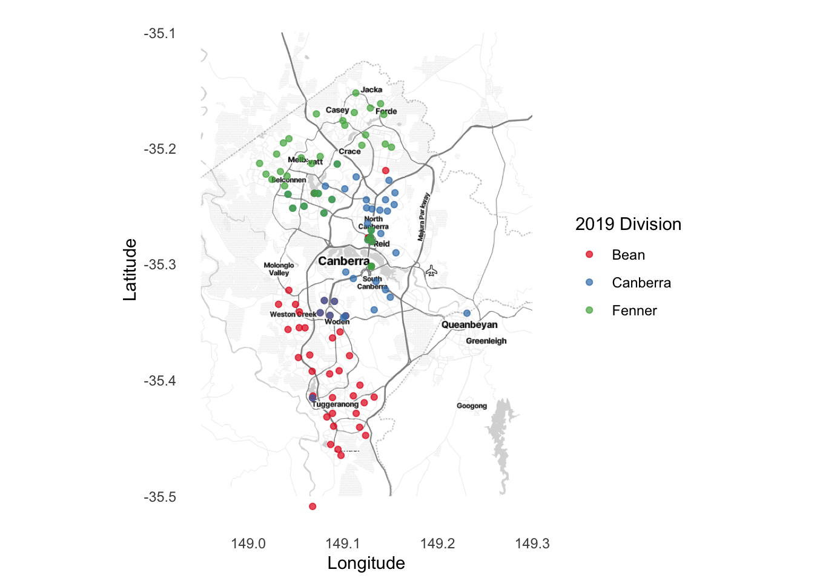
We may like to save the map so that we do not have to draw it every time, and we can do that in the same way as any other graph, using ggsave().
ggsave("map.pdf", width = 20, height = 10, units = "cm")Finally, the reason that we used Stamen Maps and OpenStreetMap is because it is open source, but we could have also used Google Maps. This requires you to first register a credit card with Google, and specify a key, but with low usage the service should be free. Using Google Maps, by using get_googlemap() within ggmap brings some advantages over get_stamenmap(), for instance it will attempt to find a place name rather than needing to specify a bounding box.
5.4.2 US troop deployment
Let us see another example of a static map, this time using data on US military deployments from troopdata (Flynn 2022). We can access data about US overseas military bases back to the start of the Cold War using get_basedata().
install.packages("troopdata")library(troopdata)
bases <- get_basedata()
head(bases)# A tibble: 6 × 9
countryname ccode iso3c basename lat lon base lilypad fundedsite
<chr> <dbl> <chr> <chr> <dbl> <dbl> <dbl> <dbl> <dbl>
1 Afghanistan 700 AFG Bagram AB 34.9 69.3 1 0 0
2 Afghanistan 700 AFG Kandahar Airfield 31.5 65.8 1 0 0
3 Afghanistan 700 AFG Mazar-e-Sharif 36.7 67.2 1 0 0
4 Afghanistan 700 AFG Gardez 33.6 69.2 1 0 0
5 Afghanistan 700 AFG Kabul 34.5 69.2 1 0 0
6 Afghanistan 700 AFG Herat 34.3 62.2 1 0 0We will look at the locations of US military bases in Germany, Japan, and Australia. The troopdata dataset already has the latitude and longitude of each base, and we will use that as our item of interest. The first step is to define a bounding box for each country.
library(ggmap)
# From: https://data.humdata.org/dataset/bounding-boxes-for-countries
bbox_germany <-
c(
left = 5.867,
bottom = 45.967,
right = 15.033,
top = 55.133
)
bbox_japan <-
c(
left = 127,
bottom = 30,
right = 146,
top = 45
)
bbox_australia <-
c(
left = 112.467,
bottom = -45,
right = 155,
top = -9.133
)Then we need to get the tiles using get_stamenmap() from ggmap.
germany_stamen_map <-
get_stamenmap(bbox_germany, zoom = 6, maptype = "toner-lite")
japan_stamen_map <-
get_stamenmap(bbox_japan, zoom = 6, maptype = "toner-lite")
australia_stamen_map <-
get_stamenmap(bbox_australia, zoom = 5, maptype = "toner-lite")And finally, we can bring it all together with maps showing US military bases in Germany (Figure 5.28), Japan (Figure 5.29), and Australia (Figure 5.30).
ggmap(germany_stamen_map) +
geom_point(
data = bases,
aes(
x = lon,
y = lat
)
) +
labs(
x = "Longitude",
y = "Latitude"
) +
theme_minimal()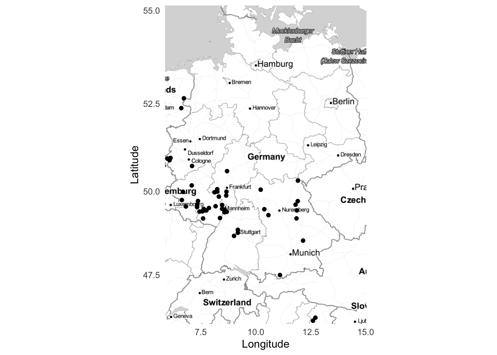
ggmap(japan_stamen_map) +
geom_point(
data = bases,
aes(
x = lon,
y = lat
)
) +
labs(
x = "Longitude",
y = "Latitude"
) +
theme_minimal()
ggmap(australia_stamen_map) +
geom_point(
data = bases,
aes(
x = lon,
y = lat
)
) +
labs(
x = "Longitude",
y = "Latitude"
) +
theme_minimal()
5.4.3 Geocoding
So far we have assumed that we already had geocoded data, which means that we have latitude and longitude coordinates for each place. But sometimes we only have place names, such as “Sydney, Australia”, “Toronto, Canada”, “Accra, Ghana”, and “Guayaquil, Ecuador”. Before we can plot them, we need to get the latitude and longitude coordinates for each case. The process of going from names to coordinates is called geocoding.
Oh, you think we have good data on that!
While you almost surely know where you live, it can be surprisingly difficult to specifically define the boundaries of many places. And this is made especially difficult when different levels of government have different definitions. Bronner (2021) illustrates this in the case of Atlanta, Georgia, where there are (at least) three official different definitions: 1) the metropolitan statistical area; 2) the urbanized area; and 3) the census place. She points out that which definition is used will have a substantial effect on the result of any analysis, or even the data that are available, even though they are all unimpeachably about Atlanta.
There are a range of options to geocode data in R, but tidygeocoder is especially useful (Cambon and Belanger 2021). We first need a dataframe of locations.
place_names <-
tibble(
city = c("Sydney", "Toronto", "Accra", "Guayaquil"),
country = c("Australia", "Canada", "Ghana", "Ecuador")
)
place_names# A tibble: 4 × 2
city country
<chr> <chr>
1 Sydney Australia
2 Toronto Canada
3 Accra Ghana
4 Guayaquil Ecuador library(tidygeocoder)
place_names <-
geo(
city = place_names$city,
country = place_names$country,
method = "osm"
)
place_names# A tibble: 4 × 4
city country lat long
<chr> <chr> <dbl> <dbl>
1 Sydney Australia -33.9 151.
2 Toronto Canada 43.7 -79.4
3 Accra Ghana 5.56 -0.201
4 Guayaquil Ecuador -2.19 -79.9 And we can now plot and label these cities (Figure 5.31).
world <- map_data(map = "world")
ggplot() +
geom_polygon(
data = world,
aes(
x = long,
y = lat,
group = group
),
fill = "white",
colour = "grey"
) +
coord_map(ylim = c(47, -47)) +
geom_point(
aes(
x = place_names$long,
y = place_names$lat
),
color = "black"
) +
geom_text(
aes(
x = place_names$long,
y = place_names$lat,
label = place_names$city
),
nudge_y = -5
) +
theme_classic() +
labs(
x = "Longitude",
y = "Latitude"
)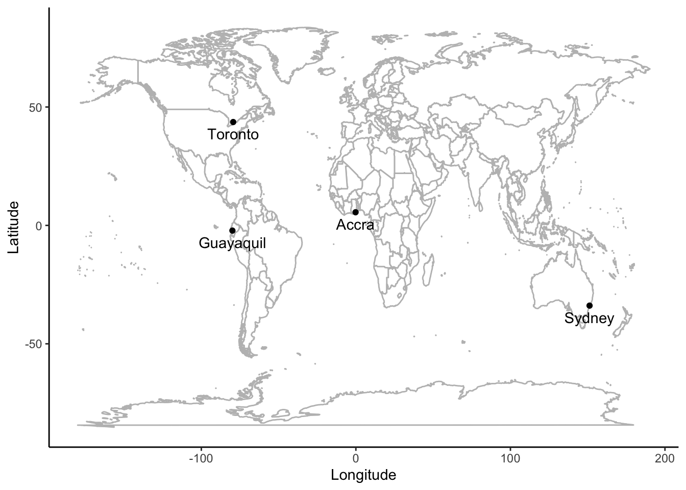
5.5 Concluding remarks
In this chapter we have covered a lot of ground, focused on communicating data. We spent a lot of time on graphs, because of their ability to convey a large amount of information in an efficient way. We then turned to tables because of how they can specifically convey information. Finally, we discussed maps, which allow us to display geographic information. The most important task is to show the actual data to the full extent possible.
5.6 Exercises
Scales
- (Plan) Consider the following scenario: Five friends—Ash, Jacki, Matt, Mike, and Rol—each measure the height of 20 of their friends. Each of the five use a slightly different approach to measurement and so make slightly different errors. Please sketch out what that dataset could look like and then sketch a graph that you could build to show all observations.
- (Simulate) Please further consider the scenario described and simulate the situation with every variable independent of each other. Please include three tests based on the simulated data.
- (Acquire) Please describe a possible source of such a dataset.
- (Explore) Please use
ggplot2to build the graph that you sketched using the data that you simulated. - (Communicate) Please write two paragraphs about what you did.
Questions
Assume the
tidyverseanddatasauRusare installed and loaded. What would be the outcome of the following code?datasaurus_dozen |> filter(dataset == "v_lines") |> ggplot(aes(x=x, y=y)) + geom_point()- Four vertical lines
- Five vertical lines
- Three vertical lines
- Two vertical lines
Assume the
tidyverseand the “beps” dataset have been installed and loaded. Which argument should be added togeom_bar()in the following code to make the bars for the different parties be next to each other rather than on top of each other?beps |> ggplot(mapping = aes(x = age, fill = vote)) + geom_bar()position = "side_by_side"position = "dodge"position = "adjacent"position = "closest"
Which theme does not have solid lines along the x and y axes (pick one)?
theme_minimal()theme_classic()theme_bw()
Assume the
tidyverseand the “beps” dataset have been installed and loaded. What should be added tolabs()to change the text of the legend?beps |> ggplot(mapping = aes(x = age, fill = vote)) + geom_bar() + theme_minimal() + labs(x = "Age of respondent", y = "Number of respondents")color = "Voted for"legend = "Voted for"scale = "Voted for"fill = "Voted for"
Which palette from
?scale_colour_brewer()is diverging (hint: read the help)?- “Accent”
- “RdBu”
- “GnBu”
- “Set1”
Which geom should be used to make a scatter plot?
geom_smooth()geom_point()geom_bar()geom_dotplot()
Which of these would result in the largest number of bins?
geom_histogram(binwidth = 5)geom_histogram(binwidth = 2)
Suppose there is a dataset that contains the heights of 100 birds, each from one of three different species. If we are interested in understanding the distribution of these heights, then in a paragraph or two, please explain which type of graph should be used and why.
Assume the dataset and columns exist. Would this code work?
data |> ggplot(aes(x = col_one)) |> geom_point()(pick one)?- Yes
- No
Which geom should be used to plot categorical data (pick one)?
geom_bar()geom_point()geom_abline()geom_boxplot()
Why are boxplots often inappropriate (pick one)?
- They hide the distribution of the data.
- They are hard to make.
- They are ugly.
- The mode is clearly displayed.
Which of the following, if any, are elements of the layered grammar of graphics (Wickham 2010) (select all that apply)?
- A default dataset and set of mappings from variables to aesthetics.
- One or more layers, with each layer having one geometric object, one statistical transformation, one position adjustment, and optionally, one dataset and set of aesthetic mappings.
- Colors that enable the reader to understand the main point.
- A coordinate system.
- The facet specification.
- One scale for each aesthetic mapping used.
Which function from
modelsummaryis used to create a table of descriptive statistics?datasummary_descriptive()datasummary_skim()datasummary_crosstab()datasummary_balance()
Tutorial
Use Quarto, and include an appropriate title, author, date, and citations. Submit a PDF.
Please create a graph using ggplot2 and a map using ggmap and add explanatory text to accompany both. Be sure to include cross-references and captions, etc. Each of these should take about pages.
Then, with regard the graph you created, please reflect on Vanderplas, Cook, and Hofmann (2020). Add a few paragraphs about the different options that you considered to make the graph more effective. If you have not now got at least two pages for each, then you have likely written too little.
And finally, with regard to the map that you created, please reflect on the following quote from Heather Krause, founder of We All Count: “maps only show people who aren’t invisible to the makers” as well as Chapter 3 from D’Ignazio and Klein (2020) and add a few paragraphs related to this. If you have not now got at least two pages for the map, then you have likely written too little.
Paper
At about this point the Mawson Paper from Online Appendix D would be appropriate.